Azerbaijan’s Nationally Determined Contribution 3.0
3-NOP |
3-Nitrooxypropanol |
AD |
Anaerobic Digestion |
ADB |
Asian Development Bank |
ADSEA |
Azerbaijan State Water Resources Agency |
AFOLU |
Agriculture, forestry and other land use |
AREA |
Azerbaijan Renewable Energy Agency under the Ministry of Energy of the Republic of Azerbaijan |
AERA |
Azerbaijan Energy Regulatory Agency under the Ministry of Energy of the Republic of Azerbaijan |
ASCO |
Azerbaijan Caspian Shipping Company |
AZAL |
Azerbaijan Airlines |
bcma |
Billion Cubic Meters per Annum |
BAU |
Business-as-Usual |
Baseload demand |
Minimum level of continuous electricity demand that must be met at all times |
BTR |
Biennial Transparency Report |
CapEx |
Capital expenditure |
CBAR |
Central Bank of Azerbaijan |
CCGT |
Combined Cycle Gas Turbine |
CCS |
Carbon Capture and Storage |
CCUS |
Carbon Capture Utilization and Storage |
CH4 |
Methane |
CO2 |
Carbon Dioxide |
CO2eq |
Carbon Dioxide Equivalent |
COP |
Conference of the Parties |
CSO |
Civil Society Organization |
DAC |
Direct Air Capture |
DACS |
Direct Air Capture and Storage |
Decarbonization |
The process of reducing all greenhouse gas emissions through the use of low-carbon energy sources and technologies. |
DSM |
Demand side management |
DRI |
Direct Reduced Iron |
EAF |
Electric Arc Furnace |
EBRD |
European Bank for Reconstruction and Development |
Eq |
Equivalent |
ETF |
Enhanced Transparency Framework |
EV |
Electric vehicle |
EVCI |
Electric vehicle charging infrastructure |
FAO |
Food and Agriculture Organization |
FbF |
Forecast based financing |
F-gases |
Fluoridated Gases: refer to industrial gasses like Hydrofluorocarbons (HFCs), Perfluorocarbons (PFCs), Sulphur Hexafluoride (SF6), Nitrogen Trifluoride (NF3) |
GDP |
Gross Domestic Product |
GST |
Global Stocktake |
GWP |
Global Warming Potential: describe the relative potency, molecule for molecule, of a greenhouse gas, taking account of how long it remains active in the atmosphere and is calculated over 100 years. |
GEF |
Global Environment Facility |
GHG |
Greenhouse Gas |
GW |
Gigawatt |
IEA |
International Energy Association |
ICE |
Internal Combustion Engine |
IOC |
International Oil Company |
ILO |
International Labour Organization |
Interim target |
Refers to a milestone set by a country for reducing GHG emissions within a specified timeframe before the final target date. In the context of NDC 3.0 interim target is set to 2035. |
IPCC |
Intergovernmental Panel on Climate Change |
IPPU |
Industrial processes and product use |
IRENA |
International Renewable Energy Agency |
LDAR |
Leakage Detection and Repair |
LDES |
Long-Duration Energy Storage |
Levelized Abatement Cost |
The average cost of reducing one ton of CO₂ equivalent emissions over the lifetime of a decarbonization measure, considering both capital and operational expenditures |
Lever/measure |
Abatement technology or method |
LTS |
Long-Term Low Emission Development Strategy |
LULUCF |
Land Use, Land-Use Change, and Forestry |
MACC |
Marginal Abatement Cost Curve |
MoEn |
Ministry of Energy |
MoE |
Ministry of Economy |
MoENR |
Ministry of Ecology and Natural Resources |
MoU |
Memorandum of Understanding |
MSW |
Municipal Solid Waste |
Mt |
Megaton |
Mln |
Million |
MDB |
Multilateral Development Banks |
N2O |
Nitrous Oxide |
NAP |
National Adaptation Plan |
NAMA |
Nationally Appropriate Mitigation Actions |
NCQG |
New Collective Quantified Goal |
NDC |
Nationally Determined Contribution |
Net-Zero |
A state where the amount of greenhouse gases emitted is balanced by an equivalent amount removed from the atmosphere. |
NGO |
Non-Governmental Organization |
NHS |
National Hydrometeorology Service |
NOC |
National Oil Company |
OCGT |
Open-Cycle Gas Turbine |
OGDC |
Oil and Gas Decarbonization Charter |
OGMP |
Oil and Gas Methane Partnership |
OpEx |
Operational expenditure |
UN |
United Nations |
UNDP |
United Nations Development Programme |
UNECE |
United Nations Economic Commission for Europe |
UNEP |
United Nations Environment Programme |
UNFCCC |
United Nations Framework Convention on Climate Change |
UNFPA |
United Nations Population Fund |
UNICEF |
United Nations International Children’s Emergency Fund |
UNIDO |
United Nations Industrial Development Organization |
PPA |
Power Purchase Agreement |
PPP |
Public-Private Partnership |
PSA |
Production Sharing Agreement |
Pathway |
Scenario or trajectory that outlines potential future developments in areas like emissions, energy use, or climate impacts. |
RCP |
Representative Concentration Pathways: a greenhouse gas concentration trajectory used in climate modeling and research. |
Reference Year |
A year used for comparing emissions to measure the progress. In the context of NDC 3.0 the reference year is defined as 1990. |
R&D |
Research and Development |
RES |
Renewable Energy Sources |
SAF |
Sustainable Aviation Fuel |
Scope 1 |
Emissions refer to direct greenhouse gas emissions from sources owned or controlled by the organization |
Scope 2 |
Emissions cover indirect emissions from the generation of purchased electricity, steam, heating, and cooling consumed by the organization |
Scope 3 |
Emissions encompass all other indirect emissions that occur in the value chain of the organization, including both upstream and downstream activities |
SDG |
Sustainable Development Goal |
SOCAR |
State Oil Company of Azerbaijan Republic |
SOE |
State-Owned Entity |
SMR |
Steam Methane Reforming |
T&D |
Transmission and Distribution |
Target Year |
Refers to the specific year by which a country aims to achieve its stated climate goals, such as reducing GHG emissions. |
Theme |
Group of measures that outlines actions to reduce GHG emissions |
TW |
Terawatt |
VRE |
Variable Renewable Energy |
WMO |
World Meteorological Organization |
Global average temperatures have been rising significantly in recent years, compared to 1850- 1900. The ten-year average 2014-2023 global temperature has risen 1.2°C above the 1850-1900 average and if current trends continue, it is projected to increase by 2.8°C by 2100.1 Due to its geographical position, Azerbaijan is particularly susceptible to the impacts of climate change, including extreme weather events, temperature fluctuations, and sea level decline. Without global reductions in greenhouse gas (GHG) emissions, the country could experience substantial impacts that pose risks to its natural environment. As a Party to the Paris Agreement, the country acknowledges the urgency of mitigating climate change and is committed to implementing adaptation strategies to build resilience against its effects.
The first Global Stocktake (GST) assessment, as outlined by the United Nations Framework Convention on Climate Change (UNFCCC), marks a critical juncture in the global fight against climate change. While it acknowledges concerted efforts and some progress, it indicates that current measures are insufficient to meet the ambitious targets of the Paris Agreement. The assessment stresses the exigent need for more immediate and vigorous actions to limit global warming to 1.5°C. It also underscores the importance of bolstering adaptive capacities and resilience, especially for communities and ecosystems at risk, and calls for heightened financial and technological support for developing nations. Policy recommendations include expanding the use of renewable energy, enhancing energy efficiency, and strengthening international cooperation. Adding to this, the Nationally Determined Contribution (NDC) report emphasizes the importance of an inclusive strategy that engages diverse stakeholders, such as economically vulnerable groups of people, local communities, and the private sector, to ensure effective and equitable climate action. This inaugural GST is a crucial reminder that intensified and collaborative efforts are essential for closing the gap between current actions and global climate objectives.
The GST’s findings necessitate revising Nationally Determined Contributions (NDCs) to set more ambitious targets and implement immediate measures to reduce GHG emissions. This includes prioritizing adaptation strategies to help communities and ecosystems at risk, building resilience and ensuring these efforts are inclusive. It is essential for the country to seek increased technological and financial support by engaging with international financial institutions and climate funds and strengthening public–private partnerships. Additionally, expanding renewable energy capacity; improving energy efficiency in buildings, industry, and transportation; strengthening international cooperation; and adopting an inclusive approach that involves local communities, civil society, and the private sector are all essential steps to achieve heightened ambition of decarbonization targets. Ultimately, enhancing monitoring and reporting mechanisms for transparency and accountability will ensure progress in NDC implementation. Addressing these areas will boost contributions to global climate goals and ensure sustainable development and resilience.
In line with its commitment to the Paris Agreement, Azerbaijan is dedicated to limiting the global average temperature rise to 1.5°C above preindustrial levels. The country aims to achieve 40% emissions reduction by 2035, compared to 1990, setting a transformative and highly ambitious target. However, the success of this goal depends on securing substantial international financial support, addressing gaps in technology and infrastructure.
In order to achieve NDC 3.0 target, the country is implementing actions across all key sectors, including power, buildings, oil and gas, transportation, industry, waste, and agriculture, forestry, and other land use (AFOLU) across the country targeting carbon dioxide (CO2), methane (CH4), nitrous oxide (N2O), and industrial gases (F-gases). Some key decarbonization pathways include adopting renewable energy, enhancing energy efficiency in various sectors, transitioning to sustainable transportation systems, and retrofitting buildings.
Recently, on 14 October 2025 Azerbaijan ratified the Kigali Amendment to the Montreal Protocol on Substances that Deplete the Ozone Layer which was endorsed by Presidential Decree. Reducing climate-related risks and taking action are essential for environmental sustainability and economic diversification. Investing in green technologies and sustainable practices can create new revenue streams while generating jobs. The transition to a greener economy offers an opportunity for Azerbaijan to innovate and develop industries that can thrive in a low-carbon future, thereby elevating the country’s economic resilience and competitiveness.
It is crucial to highlight that the liberation and reintegration of the Karabakh and East Zangezur economic regions into the national economy will significantly intensify the country’s efforts toward green growth. By transforming these regions through the “green energy zone” initiative as mandated by the May 3, 2021, decree of the President of the Republic of Azerbaijan Ilham Aliyev (which also became one of the initiatives in the COP29 Presidency's Action Agenda), Azerbaijan is harnessing the considerable potential for renewable energy and launching energy efficiency projects in these areas. This will pave the way for a cleaner and greener future, following a long period of deforestation and over- exploitation of resources during the occupation. The government’s focused efforts on smart agriculture and reforestation of thousands of hectares in these regions will not only improve natural habitats but also contribute to carbon sequestration, which is essential for combating climate change. Embracing these initiatives and investments in Karabakh and East Zangezur will exemplify a successful transition toward sustainability, demonstrating the commitment to a cleaner future for the region and the planet.
Furthermore, as highlighted in this report, Nakhchivan Autonomous Republic of Azerbaijan has also been designated as a “green energy zone” too, positioning it to benefit significantly from the implementation of renewable energy projects. This transformation will enable the Nakhchivan Autonomous Republic to become a net energy exporter, enhancing its strategic importance in the region and contributing to Azerbaijan's broader goals of sustainable development and energy security.
Additionally, the COP29 Presidency has introduced Action Agenda initiatives and associated pledges and declarations, which were integrated into the development of this NDC and aim to drive global climate action. These comprehensive initiatives cover grids, energy storage, green energy zones and corridors, clean hydrogen, digital action, methane reduction from waste sector, resilient cities, tourism, water, finance, transparency, agriculture and human development. Collectively, these global initiatives underscore the COP29 Presidency’s dedication to extensive and coordinated efforts in addressing global climate challenges.
It is also worth noting that Azerbaijan has signed up to the Global Methane Pledge, an important voluntary commitment to collectively reduce overall methane emissions by 30% by 2030 in the world, compared to 2020 levels. The State Oil Company of the Republic of Azerbaijan (SOCAR) is one of the participants of the Oil & Gas Decarbonization Charter (OGDC), which was proposed and formed during COP28. The charter sets ambitious goals, including achieving Net-Zero operations by 2050. Additionally, SOCAR has joined the Oil & Gas Methane Partnership (OGMP 2.0 – the flagship oil and gas reporting and mitigation program of the United Nations Environment Program (UNEP)), further demonstrating its commitments.
Transitioning to green economy in a just, orderly and equitable manner will expedite emission reductions and pave the way for a sustainable and diversified economy.
Decarbonizing the country’s economy depends heavily on inclusivity, ensuring that all societal groups including, women, elderly, internally displaced persons, and children, among others, are actively engaged in the transition. The participation of civil society organizations (CSOs), non-governmental organizations (NGOs), and academic institutions, the private sector as well as the government entities, is crucial and has been actively leveraged in the development of this document.
Azerbaijan has established strong collaborations with UN organizations, and other international organizations such as such as International Renewable Energy Agency (IRENA), UNFCCC, etc. to advance these goals. Key components for a successful transition include securing adequate financing, building capacity, and enhancing education. Additionally, Azerbaijan’s decarbonization efforts will be guided by the Enhanced Transparency Framework (ETF), which will serve as a cornerstone for monitoring and reporting progress and complying with any future systems or frameworks introduced by the UNFCCC. These measures will ensure effective progress tracking, alignment with UN reporting requirements, and the achievement of NDC 3.0 target.
The aim of this report is to provide transparency on plans to address climate change and outline a roadmap for achieving the country's mitigation targets, also accounting for the National Adaptation Plan (NAP). It reaffirms the commitment to reducing GHG emissions while promoting climate resilience, supporting global sustainability, and ensuring an inclusive just transition for all.
As the host country and organizer of COP29 and a member of the Troika, including the UAE and Brazil, Azerbaijan is committed to leading global climate action by fostering international collaboration, implementing ambitious environmental policies, and advancing sustainable development. The ultimate goal is to achieve a resilient, Net-Zero future, enhancing ambition and enabling action in solidarity for a green world.
2.1. NDC 3.0 Background Information
Azerbaijan, like many other countries, is severely impacted by the climate crisis, as evidenced by rising temperatures, shifting weather patterns, land degradation, water resource decline and Caspian Sea level shallowing. These changes pose serious threats to its biodiversity, water resources, and agricultural productivity, which all affect economic development and public welfare. In response, climate action strategies are being updated, including commitments mentioned in the NDC 2 report supplemented by the NAP, to address these challenges through robust mitigation measures and international cooperation.
The NDC 2 report underscored the country’s pledge to reduce GHG emissions by 40% from 1990 level by 2050, conditional on additional support such as financing and technology transfer.
The NDC 2 report also outlined high-level sectoral policies, particularly in energy, industrial processes and product use (IPPU), agriculture, land use, waste management, and forestry.
The development of the NDC 3.0 report is driven by the need for more ambitious targets to reduce GHG emissions in line with GST outcomes, and the dual pillars vision of the COP29 Presidency, which focuses on enhancing ambition and enabling action. This revision addresses the limitations identified in the NDC 2 report and aims to meet the targets outlined in the Paris Agreement, specifically limiting global warming to 1.5°C above pre-industrial levels. The report aims to establish more ambitious decarbonization goals and present a forward-looking vision for emissions reduction.
2.2. NDC 3.0 Report Content Changes Compared to NDC 2
The NDC 3.0 report features several significant updates and enhancements compared to the previous version
(Table 1).
Table 1. Summary of comparison between NDC 2 and NDC 3.0
Description of updates |
NDC 2 |
NDC 3.0 |
|
More ambitious targets |
Sets the target to reduce emissions by 40% by 2050 compared to 1990 levels. |
Aims to reduce emissions by 40% by 2035 compared to 1990 |
|
Increased level of sectoral granularity |
Distributes emissions in four sectors – energy, agriculture, industry and waste. |
Energy sector splits further into power, oil and gas, transportation, and buildings. |
|
Clear mitigation plans per sectors and implementation roadmap |
Includes cross-sectoral mitigation measures and assesses the environmental impact of sectors. |
Outlines sector-specific mitigation plans and implementation roadmap. |
|
Reference and baseline year |
Sets reference year as 1990, takes into account baseline year of 2016. |
Reference year 1990 emission levels updated corresponding to latest IPCC guidelines. Sets baseline year as 2022 to provide greater precision for projections and impact estimates |
MORE AMBITIOUS TARGETS
As a developing country, Azerbaijan aims to balance several socio-economic factors such as economic growth, social well-being, and environmental sustainability, ensuring that decarbonization efforts align with long-term prosperity and sectoral advancement. NDC 3.0 report sets more ambitious targets, aiming to reduce emissions by 40% by 2035 compared to 1990 contingent to specific conditionalities. The conditionalities include enhanced financial resources, international financial support (e.g., concessional loans, private sector investment), technology availability, technology transfer, increased technology maturity level, capability-building support, and availability of absorptive capacity of forests and other ecosystems (Figure 1).
Figure 1. NDC 2 vs. NDC 3.0 emission target, MtCO2eq
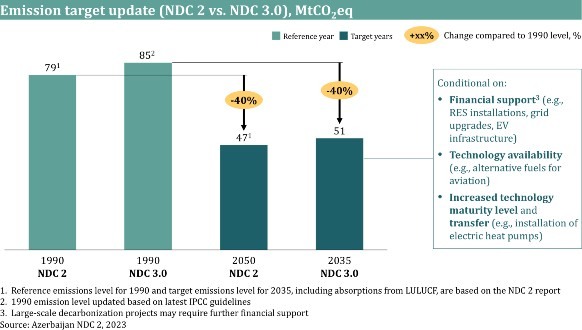
INCREASED LEVEL OF SECTORAL GRANULARITY
NDC 3.0 report provides higher granularity compared to NDC 2 report and introduces comprehensive, sector-specific strategies, addressing the unique challenges and opportunities within seven key sectors: power, oil and gas, buildings, industry, transportation, AFOLU, and waste (Figure 2). This approach not only facilitates more targeted and effective policymaking but also enhances feasibility of national climate goals.
Figure 2. Comparison of sectoral emission distributions in NDC 2 and NDC 3.0
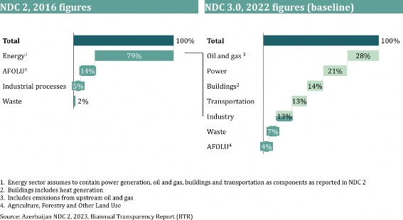
CLEAR MITIGATION PLANS PER SECTORS AND IMPLEMENTATION ROADMAP
The NDC 3.0 report outlines mitigation plans and implementation roadmap for each sector, emphasizing the involvement of multiple stakeholders and outlining necessary resources, including technological advancements. It provides clear pathways, action plans, and required conditions, focusing on measurable and impactful outcomes. The report emphasizes the importance of both public and private sector financing, along with extra support and cooperation to effectively mobilize resources for these ambitious climate initiatives. This strategic approach not only aligns with the country’s commitments under the Paris Agreement but also strengthens its policies for robust, sustainable development and global climate action cooperation.
REFERENCE AND BASELINE YEAR
In the context of NDC 3.0, the emissions baseline year for estimating reductions has been updated from 2016 to 2022, and the 1990 reference year emissions level has been revised according to the latest IPCC guidelines. This update ensures that GHG emissions reduction pathways for each sector are based on the most accurate and recent data, thereby providing greater precision for projections and estimates for the impact of levers and enabling the establishment of more realistic and ambitious climate goals for Azerbaijan. This update also includes an estimation of the resources required to achieve this target.
Geographic and Population Profile
GEOGRAPHIC PROFILE
Azerbaijan is located at the crossroads of Eastern Europe and Western Asia, bordered by the Caspian Sea to the east, Türkiye to the southwest, Russia to the north, Georgia to the northwest, Armenia to the west, and Iran to the south.
Covering an area of 86,600 square kilometers, Azerbaijan features a diverse topography, including the Greater Caucasus Mountain range in the North, the Lesser Caucasus Mountain range in the South, and expansive central flatlands. The country also has an 825-kilometer coastline along the Caspian Sea. Approximately 60% of the country is covered by mountains and 40% by lowlands and plains. The total forest coverage constitutes 12.19% of the overall area (Figure 3).2
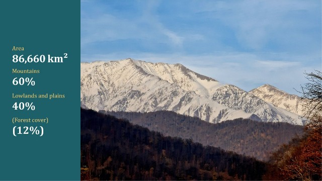
Figure 3. Key indicators of Azerbaijan
Azerbaijan’s location allows the country to experience a diverse range of climatic zones. The Greater Caucasus Mountain range shields the country from cold air masses from the north, resulting in milder winters in most areas. This region also receives the highest amount of precipitation in Azerbaijan, fostering lush vegetation compared to the more arid regions elsewhere. In contrast, the central flatlands, including the Kura-Araz Lowland, have a semi- arid to arid climate, characterized by hot summers and mild winters. The Caspian Sea coastline, including Baku, experiences a more temperate climate with mild, wet winters and warm, dry summers, influenced by the moderating effect of the Caspian Sea.
POPULATION PROFILE
The country's population has been growing steadily, 3 driven by economic conditions, migration trends, and government policies. As of the end of 20233 , the population is estimated to be approximately 10.2 million (mln) and is projected to grow by about 6% by 2030. The demographic profile reveals a relatively young population, with approximately 60% under age of 40 (Figure 4).3 Significant government reforms and various incentive programs have positively impacted education and healthcare,4 leading to an enhanced quality of life and increased life expectancy.
The urbanization rate has also been rising, with 55% of the population now living in urban areas, primarily in major cities such as Baku, Ganja, Sumgait, and Mingachevir.3 This trend is expected to continue. Baku remains the most populous city and serves as the country's economic, cultural, and administrative center with a population of more than 2 mln people as of the end of 2023.
Figure 4. Population growth and population demographics
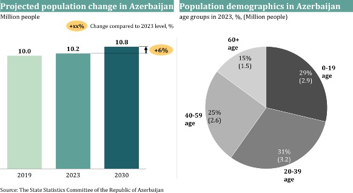
Azerbaijan is confronting significant climate- related issues. Predictions of substantial temperature increases threaten vital sectors such as AFOLU and energy, underscoring the critical need for immediate and effective climate action.
CURRENT SITUATION AND PROJECTIONS
Temperature
The climate of Azerbaijan is strongly influenced by its geographical position, relief, and the Caspian Sea. Over the past 23 years, the average temperature increase across the country has reached 1.1°C. In 2023, the average temperature rose to 14.6°C, which is 1.9°C higher than the norm. The highest average temperature in recent decades was recorded in 2010, reaching 14.8°C.5
Heat waves
The frequency of heat waves - defined as prolonged periods of excessively hot weather lasting three or more consecutive days with temperatures exceeding 35°C - has risen significantly in the Baku region, with the number of heatwave days increasing from 86 days in the 1960-1990 period to 365 days in 1991-2020. 6 Urban areas such as Baku experience even more pronounced effects due to the urban heat island effect, where urban areas have significantly higher temperatures than their surrounding rural areas because of human activities and the organization of the city (e.g., infrastructural elements like pavements). This increase exacerbates high temperatures, leading to more frequent and intense heatwaves. These temperature increases are likely to result in higher rates of heat-related illnesses, strain healthcare systems, and increase energy demand due to rising AC usage. Additionally, these conditions could adversely affect agriculture, reduce water availability, and heighten the risk of wildfires, further stressing ecosystems and human settlements. Efforts to mitigate these impacts include enhancing urban green spaces, improving building designs to reduce heat absorption, and increasing public awareness and preparedness for heat waves.6
Water and sea level
Water resources are under significant stress due to climate change.6 The uneven distribution of water resources, combined with increased evaporation rates and river flows, has reduced Azerbaijan’s water resources by approximately 15% over recent decades.6 These further strains water availability and exacerbates water scarcity issues, particularly critical for the AFOLU sector, which relies heavily on irrigation. Furthermore, precipitation in the country as a whole decreased by about 3.4% over the last 10 years, compared to the climatic normal of 1971-2000, further contributing to water stress.5
Furthermore, the Caspian Sea, which borders Azerbaijan, is experiencing sea level changes. Recent studies show a continued decline, with an average drop of more than two meters in the last 30 years mainly due to decreased river inflow and increased evaporation due to rising temperature and other geological factors. This decline poses risks to coastal infrastructure and ecosystems.5 According to global benchmarks, even small changes in sea level – such as 1-2 millimeters per year - can lead to the gradual loss of coastal wetlands. Such changes threaten coastal infrastructure, ecosystems, and economic activities due to increased salinity, disrupted habitats, and challenges for water-dependent industries and communities.
Climate-related catastrophes
Significant risks remain from climate-related catastrophes, the frequency of which has increased over the past two decades. The country is particularly vulnerable to riverine and flash floods, which have caused substantial infrastructure damage, particularly in the central and southeastern regions in recent years.
Average monthly rainfall in the country shows two distinct peaks, with increased amounts in spring and fall seasons. Intensity of rainfall events is increasing with rising temperatures, with the annual precipitation of 491 millimeters in Azerbaijan in 2023.7 In various regions across the country, while some areas experience several times the average monthly rainfall, others receive significantly less than the monthly norm. This indicates variability and potential risks to agriculture, water resources, ecosystems, human health, infrastructure and economy.
Frequent landslides and mudslides also occur, particularly in the mountainous regions, which exacerbates the impact of heavy rainfall and flooding. Over the past decade, more than 200 recorded landslides have affected rural communities and disrupted transportation networks.
In the last 30 years, the number of hot and dry winds has increased 14 times, while the duration of droughts has increased by more than 20%, causing severe damage to agriculture. At the same time, the number of hail events has more than tripled over the past 10 years. Previously, hail was mainly observed in mountainous and foothill areas, but nowadays this phenomenon affects flat areas as well.8
MAIN SECTORS AFFECTED
Climate change significantly impacts multiple sectors, with agriculture and power being the most affected.
Agriculture, a vital sector that employs over 33- 35% of the workforce,9 is significantly threatened by climate change. The sector's productivity is expected to decline due to direct impacts such as changes in, temperature, and precipitation, and indirect effects, such as altered water availability, soil erosion, and shifts in pest dynamics.
Climate change is expected to exacerbate water scarcity, impacting both crop yields and irrigation practices. Rising temperatures could severely impact crop viability by increasing the frequency of days with temperatures exceeding 35°C, potentially reducing crop yields and increasing agricultural water demands. This scenario suggests a grim outlook for rain-fed agriculture, which may suffer disproportionately.
Inland fishery, such as those in the Caspian Sea, are under significant pressure from changes in water levels. These pressures arise from human activities like damming, water extraction, and climate change, directly impacting fish habitats. Even relatively small changes in water levels can lead to habitat reduction, affecting the biodiversity and productivity of inland fisheries. A habitat reduction in inland water bodies like lakes and seas can lead to noticeable declines in fish populations, which are crucial for food security and the livelihoods of communities depending on these resources.
The energy sector, which mainly relies on gas for power production instead of high-emission fuels, faces challenges from the rising temperatures associated with climate change. Urban areas, particularly Baku, are likely to experience intensified urban heat island effects, leading to higher electricity demand. This surge in demand could increase electricity consumption during peak summer months, straining energy generation systems and highlighting the inefficiencies caused by heat stress on such systems. Moreover, hydroelectric power generation may continue to experience a capacity reduction due to decreasing water flows from accelerated glacial melting and increased evaporation rates. Therefore, robust, long-term low-emission development strategies are critical to enhancing the sector's resilience and adaptability to the impending changes driven by global warming.
In alignment with its commitments to the Paris Agreement, particularly Article 7 on adaptation, Azerbaijan is implementing a comprehensive range of measures to enhance resilience against the adverse effects of climate change. These measures include the development of the National Adaptation Plan (NAP).
NAP is developed as a strategy to strengthen climate resilience and improve long-term planning. This process involves collaboration with local and international stakeholders to ensure that adaptation measures are prioritized correctly.
To prepare NAP, several indicators based on international climate scenarios are used first to assess Azerbaijan’s vulnerability to climate change. Currently, the country is considered a highly vulnerable area (Table 2). This vulnerability is mainly attributed to increased temperatures, limited water sources, and prolonged droughts that have occurred in recent years. Based on this assessment, sensitive areas, such as water resources, agricultural areas, and the coast of the Caspian Sea, have been identified as areas requiring urgent measures to avoid future difficulties in adapting to climate change.
Table 2. Climate change vulnerability index in regions of Azerbaijan by 2041- 2069, high (yellow), high to very high (red), and very high (brown)10
Region |
Vulnerability index |
Azerbaijan Republic |
0.62 |
Baku |
0.57 |
Nakhchivan |
0.56 |
Absheron-Khizi |
0.64 |
Mountainous Shirvan |
0.60 |
Ganja-Dashkasan |
0.64 |
Garabagh |
0.67 |
Gazakh-Tovuz |
0.66 |
Guba–Khachmaz |
0.63 |
Lankaran-Astara |
0.66 |
Central Aran |
0.68 |
Mil-Mugan |
0.72 |
Shaki-Zagatala |
0.64 |
Eastern Zangazur |
0.73 |
Shirvan-Salyan |
0.73 |
WATER RESOURCES
Climate change can adversely affect the reliability of water resources due to possible increases in the frequency of droughts and floods. Considering the rising population, development of various economic sectors, and expansion of irrigated agricultural areas, the demand for water is proliferating, requiring immediate adaptation measures, specifically in irrigation, potable water supply, and sanitation.
The COP29 Declaration on Water for Climate Action calls on nations to address climate-related water challenges through international cooperation, enhanced scientific knowledge, and integration of water considerations into climate policies. The initiative promotes effective sustainable water management, the protection of water-related ecosystems, and the use of early warning systems for water-related disasters. It also includes launching the Baku Dialogue on Water for Climate Action to ensure continuous and coordinated efforts in this area. Additionally, the Baku Harmoniya Climate Initiative for Farmers aims to unify various initiatives, coalitions, and networks to share experiences, identify synergies and gaps, facilitate financing, and foster collaboration in agriculture, food, and water sectors. It focuses on empowering local communities and women in rural areas.
IRRIGATION
Irrigation systems are highly sensitive to climate change, making water management a critical concern. In Azerbaijan, irrigation is widespread, with up to 90% of water sources used for irrigation and agriculture. However, the harmful effects of floods and droughts on water supply pose significant risks to irrigation efforts.
To address these challenges, new reservoirs are being constructed as approved by the Decree of the President of the Republic of Azerbaijan (entitled “The Action Plan on Ensuring the Efficient Use of Water Resources for 2020-2022”). Additionally, the reconstruction of irrigation networks and planned infrastructure modernization are expected to prevent further water loss. Furthermore, exploring alternative sources, such as wastewater treatment or seawater, is being considered to mitigate climate change effects (Table 3).
POTABLE WATER SUPPLY AND SANITATION
Strategic goals and adaptation measures for water supply and wastewater disposal systems have been identified as critical areas for addressing the adverse effects of climate change. “National Strategy for the Rational Use of Water Resources” was adopted to increase water resources, improve quality of potable and irrigation water and modernization of infrastructure. Further adaptation measures mainly include modernizing existing infrastructure to reduce water loss, reusing and repurposing wastewater, and optimizing water use in industrial processes. Additionally, expanding water supply monitoring and further research on increased water efficiency are necessary to minimize climate change effects.
Table 3. Considered adaptation measures for water resources in Azerbaijan
Area |
Adaptation Measures |
|
Irrigation |
|
|
Potable water supply and sanitation |
|
AGRICULTURAL ACTIVITIES
Agricultural productivity may decrease due to increased temperatures, the severity of droughts and floods, desertification, and an increase in soil salinity caused by climate change. Examples of this decrease include reduced productivity in livestock production, decreased labor productivity due to heat stress, diminished pasture productivity, and changes in crop yield.
In Azerbaijan, two main strategies are being considered to mitigate the negative effects of climate change on agriculture: the sustainable use of agricultural land and irrigation water, and adaptation to climate change in crop production and animal husbandry.
SUSTAINABLE USE OF AGRICULTURAL LAND AND IRRIGATION WATER
Climate change affects soil fertility and freshwater resources, necessitating measures to restore, enhance, and protect soil fertility and ensure water efficiency in irrigation systems. These measures range from awareness-raising activities to scientific research aimed at increasing technological capabilities and advancements.
ADAPTATION TO CLIMATE CHANGE IN CROP PRODUCTION AND ANIMAL HUSBANDRY
The significant increase in average annual temperature impacts both crops and livestock. Consequently, specific activities and awareness-raising campaigns must be implemented to adapt to climate change and sustain agricultural productivity (Table 4).
Table 4. Considered adaptation measures for agricultural activities in Azerbaijan
Area |
Adaptation Measures |
|
Sustainable use of agricultural land and irrigation water |
|
|
Climate change adaption in crop production and animal husbandry |
|
COASTAL ZONE OF THE CASPIAN SEA
Recent studies indicate a steady decline in Caspian Sea levels compared to the early 1990s, primarily attributed to decreased river inflow and increased evaporation rates due to rising temperatures (Figure 5). Consequently, the coastal zone of the Caspian Sea, which is biodiverse and houses key infrastructure – such as ports, industrial facilities, and transportation networks – is becoming increasingly susceptible to the negative effects of climate change.
Figure 5. Caspian Sea level in 1922-2023, mean meter sea-level change in Baltic Sea height altitude system (mBS)
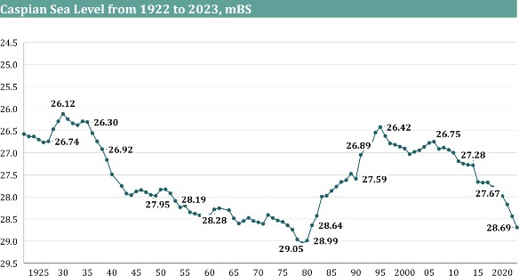
In response to these risks, adaptation measures, such as adopting an early warning system, are being developed for integrated coastal zone management, biodiversity conservation, and infrastructure protection.
EARLY WARNING SYSTEM VIA AUTOMATING HYDROMETEOROLOGICAL MONITORING NETWORK
The primary adaptation measure involves comprehensive technical modernization of terrestrial meteorological observation systems to establish an early warning system for climate- sensitive sectors. Key characteristics of these technical advancements include modern data- processing methods, improved communication channels, and automated meteorological complexes. The expected outcomes from this system are i) strengthened delivery models for climate services through policy and financial frameworks and improved climate data governance, ii) enhanced observations and predictive modeling of climate and its impacts to improve forecasting and develop urban climate services, iii) improved dissemination and communication of climate risk information and multi-hazard early warnings; and iv) increased capacity for climate risk management to respond to climate hazards (Table 5).
Table 5. Outputs and activities to be conducted to strengthen climate information and multi-hazard early warning systems for increased resilience
Outputs |
Activities |
Strengthened delivery model for climate services |
|
Enhanced observations and predictive modeling of climate and its impacts |
|
|
Improved dissemination and communication of climate risk information and early warnings |
|
Increased climate risk management capacity |
|
Azerbaijan is dedicated to fostering an inclusive process within the climate agenda, ensuring that multiple stakeholder groups are given the opportunity to express their views and actively participate in the formulation and implementation of national initiatives aimed at achieving NDC 3.0 target. Building on the momentum gained over recent years, Azerbaijan will continue to proactively engage with diverse stakeholders. The Ministry of Ecology and Natural Resources ensures that this process is inclusive, transparent, and equitable.
Throughout the whole process of NDC 3.0 development, including baseline estimation, projections construction, target setting and decarbonization pathways identification, collaboration with multiple entities was heavily leveraged. These stakeholders include: central and regional government bodies, municipalities, NGOs, educational institutions, civil society organizations, major private sector companies, and SMEs, as well as sector associations.
Furthermore, Azerbaijan remains committed to collaborating with non-governmental organizations (NGOs) to guarantee inclusiveness and the representation of various societal interests. The integration of global experience and expertise is maintained through active engagement with international and multinational organizations. Collaboration with international and multilateral entities underscores the nation's commitment to adhering to international environmental standards and practices.
Table 6 presents a non-exhaustive overview of major stakeholders actively involved in contributing to achieve NDC 3.0 target. In addition to listed entities, numerous private sector companies, municipalities, educational institutions, and other international and local organizations play a crucial role in driving decarbonization transformation. These stakeholders contribute through diverse initiatives, investments, and innovations, underscoring the collaborative effort required across public, private and societal domains to achieve sustainable, long-term impact.
Table 6. Stakeholder engagement and related activities (non-exhaustive)
List of Stakeholders |
Activities/Efforts |
|
Government Bodies |
Ministry of Ecology and Natural Resources (MoENR) |
|
|
Ministry of Energy (MoEn) |
|
|
Energy Efficiency Fund under MoEn |
|
|
|
Ministry of Economy (MoE) |
|
|
|
Ministry of Agriculture (MoA) |
|
|
|
Ministry of Digital Development and Transport |
|
|
Azerbaijan State Water Resources Agency (ADSEA) |
|
|
Government Bodies |
Ministry of Finance |
|
|
Central Bank of Azerbaijan (CBAR) |
|
|
The State Commission on Climate Change |
|
|
|
NGOs |
Local and International NGOs |
|
SOEs |
SOCAR |
|
|
Azerenergy OJSC |
|
|
Azerishiq OJSC |
|
|
Azergold CJSC |
|
|
Tamiz Shahar OJSC |
|
|
Azerbaijan Caspian Shipping Company (ASCO) |
|
|
|
Azerbaijan Airlines (AZAL) |
|
|
|
Azerbaijan Railways CJSC |
|
|
|
SOEs |
Port of Baku |
|
|
Baku Metropolitan CJSC |
|
|
International Organizations |
World Bank |
|
Asian Development Bank (ADB) |
|
|
European Bank for Reconstruction and Development (EBRD) |
|
|
UNEP |
|
|
GEF |
|
|
Demonstrating the dedication to achieve long- term sustainability and improve climate resilience, NDC 3.0 includes forward-looking country-level strategies to address the critical challenges of decarbonization. The NDC’s preparation and implementation require an inclusive, society-wide approach, involving government agencies, non-governmental institutions, and businesses. This approach is essential for integrating climate action into the national vision, enabling the NDC to be tailored to specific climate change frameworks.
NDC 3.0 considers the core objectives of Azerbaijan's Constitution, which emphasizes the duty to ensure a decent quality of life and a healthy environment for all citizens, aligning with global sustainable development commitments.
NDC 3.0 is closely aligned with “Azerbaijan 2030: National Priorities for Socio-Economic Development” the 10-year-vision, as well as its first 5-year-implementation program, the 2022- 2026 Social and Economic Development Strategy of the Republic of Azerbaijan. These state programs focus on the core objectives of a sustainable environment and green growth, including increased use of renewable energy in the power sector, efficient waste management with improved recycling, and expanded forest land. All these elements are considered in forming sectoral decarbonization pathways.
NDC 3.0 is also supplemented by the NAP, which enhances climate resilience and adaptation capacity, and prepared as a stand-alone document.
ALIGNMENT WITH INTERNATIONAL FRAMEWORKS OR OTHER PLANS
NDC 3.0 is designed to be in line with relevant international agreements and frameworks, first and foremost the Paris Agreement under the UNFCCC and related decisions thereof. To ensure adherence to the ETF, the country is also raising the profile of transparency by delivering a Biennial Transparency Report (BTR), in line with the commitments of NDC 3.0. The NDC 3.0 also incorporates the quality assurance checklist for revising NDCs by UNDP and adheres to official guidance related to NDCs contained in the relevant UNFCCC decisions.
Other international frameworks, such as the UN’s Sustainable Development Goals (SDGs), are also integrated into the development of NDC 3.0, covering improving health, taking urgent climate action, and ensuring affordable and clean energy. These alignments ensure that the climate actions contribute to broader sustainable development objectives, enhancing the coherence and effectiveness of national climate policies.
NDC is also aligned with COP29 Presidency’s Action Agenda initiatives, which provide targets for climate action. The associated pledges and declarations aim to substantially enhance global energy storage and grid capacity by 2030, promoting regional cooperation and economic growth and fostering investment in green energy zones and corridors. In addition to these efforts, they focus on unlocking the potential of clean hydrogen markets by addressing regulatory and technological barriers. Moreover, the declarations highlight the critical role digital technologies play in climate action while addressing their environmental impacts.
Furthermore, the pledges aim to enhance multisectoral cooperation to tackle climate challenges in urban areas and catalyze urban climate finance. Promoting sustainable tourism practices and integrating them into national climate policies is another key focus. There is also a call for integrated approaches to combat climate change impacts on water resources and ecosystems and to develop policies for methane reduction in waste and food systems.
Azerbaijan is committed to working collaboratively and continuing its pursuit of the key outcomes from the GST. This includes recognizing the need for deep, rapid, and sustained reductions in GHG emissions in a nationally determined manner, considering different national circumstances, pathways and approaches and a global pledge to triple renewable energy capacity and double the average annual rate of energy efficiency improvements by 2030, among others.
The country will ensure that efforts to scale up renewables and improve efficiency are conducted in an environmentally responsible manner, including through relevant policymaking, workforce development, and strengthened international collaboration.
The nation's robust economic growth since the early 2000s, has been pivotal in driving extensive infrastructural development. The diversification of the economy has been a key focus for the government, aiming at reducing reliance on hydrocarbons, and utilizing respective benefits in developing other sectors. As a result, sectors such as agriculture, tourism, construction and manufacturing have seen growth, contributing to a more balanced and diversified economic structure.11 Moreover, in line with the COP29 pledge on the Declaration on Enhanced Action in Tourism, growth in the tourism sector will be enhanced by promoting innovative sustainable practices to reduce emissions.
Azerbaijan’s economy continues to demonstrate resilience and sustainable growth. The non-oil sector contributed 63.1% to the country's gross domestic product (GDP), growing by 3.7% compared to 2022, driven by strong performance in agriculture, construction, and services. This reflects the government's ongoing efforts to reduce the economy's dependency on oil and gas.
Investment activity remained robust, with capital investments showing solid growth. Notably, investments in the non-oil sector demonstrated an increase, further strengthening the economic diversification strategy. At the same time, the energy sector continues to play an important role in overall economic structure. Advancements in energy-related infrastructure enhance energy security through efficiency and reliability improvements, generating consistent revenue streams.
The country has demonstrated substantial economic resilience and a strong commitment to climate action through strategic GDP growth, impactful climate change initiatives, and a dedicated shift toward the objectives of the Paris Agreement.
Azerbaijan’s GHG emissions are driven by seven key sectors, each contributing uniquely to the national emissions profile.
OIL AND GAS (UPSTREAM AND MIDSTREAM)
The oil and gas sector, which is one of the core pillars of the country’s economy, accounted for about 28% of total emissions in 2022, or 19.2 MtCO2eq. The main sources of emissions are fuel combustion for power and heat generation, and machine drive (e.g., compressors), along with flaring, venting, and fugitive emissions from upstream operations.
POWER
The power sector is a critical component of the energy landscape, contributing significantly to the nation's GHG emissions. In 2022, the power sector accounted for approximately 21% of the country's total emissions, accounting to 14.4 MtCO2eq. The main source of emissions in this sector is the combustion of natural gas for electricity generation.
BUILDINGS
The buildings sector accounted for approximately 14% of total emissions in 2022, totaling to 10.0 MtCO2eq. This sector includes residential and commercial buildings, with emissions mainly driven by energy consumption for heating.
TRANSPORTATION
The transportation sector is a significant source of emissions, accounting for approximately 13% of total GHG emissions in 2022 constituting 9.3 MtCO2eq. One of the main drivers was road transport, which relies heavily on gasoline and diesel fuels. Other drivers include domestic aviation, railways, water-borne navigation, and other transportation.
INDUSTRY
The industry sector accounted for about 13% of the total emissions in 2022 with emissions of 8.9 MtCO2eq. The main sources of emissions in this sector include downstream oil and gas (refining and petrochemicals) operations and industrial processes, such as production of cement, steel, and chemicals, which involve energy-intensive processes. Additionally, emissions are generated from the use of raw materials and the chemical reactions that occur during manufacturing.
WASTE
The waste management sector contributed around 7% of total GHG emissions in 2022 with a total emission of 4.9 MtCO2eq, with the main drivers being methane emissions both from landfills and wastewater treatment processes.
Without modern systems for waste processing, organic materials decompose anaerobically in landfills, leading to the release of methane. Shortcomings of proper waste segregation, recycling, and composting further exacerbate this issue.
AGRICULTURE, FORESTRY AND OTHER LAND USE (AFOLU)
AFOLU contributed to about 4% of the net total GHG emissions in 2022, totaling to 2.8 MtCO2eq emissions, with the main drivers being enteric fermentation from livestock, non-mobile stationary equipment, and the use of nitrogenous fertilizers in agriculture. Emissions from this sector primarily consist of methane (CH4) and nitrous oxide (N2O), which have higher global warming potentials compared to CO2.
Forestry and land use, covering roughly 12,19% of the country's land area, is pivotal, with activities such as afforestation, reforestation, and sustainable forest management enhancing CO2 sequestration. Grasslands and pastures, which constitute around 28% of the country’s land, store substantial carbon in plant biomass and soil, managed through rotational grazing and land restoration.
The mentioned sectors and the respective distribution of GHG emissions across components of each sector are shown below (Figure 6).
Figure 6. Total net emissions and their distribution across sectors as of 2022, MtCO2eq
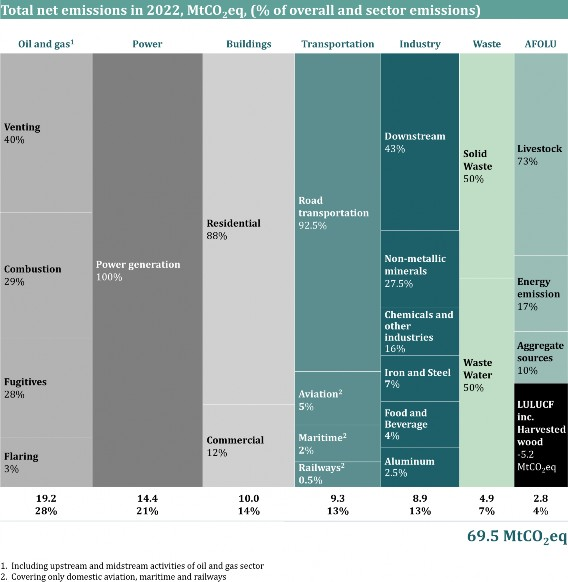
NDC 3.0 report includes an assessment of all GHG emitted domestically. This covers Carbon Dioxide (CO2), Methane (CH4), Nitrous Oxide (N2O), and industrial gases (F-gases), all of which are reported in CO2 equivalents using the AR6 Global Warming Potential (GWP) normalization (Figure 7). For the purpose of NDC 3.0, the following GHG emission scopes are considered:
Country level: Emission volumes are reported only as total emissions, without a breakdown by scope.
Sector level: Mitigation measures target both direct and indirect emissions (Scope 1 and Scope 2).
Figure 7. GHG emissions gas split for baseline year of 2022, MtCO2eq
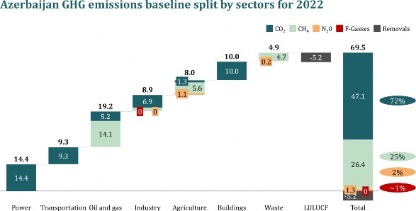
NDC 3.0 outlines comprehensive decarbonization pathways economy-wide, covering all domestic sectors contributing to GHG emissions. Across power, buildings, oil and gas, transportation, industry, waste and AFOLU sectors, four decarbonization themes, which are feasible in the country, were explored to define sectorial pathways.
Electrification generated by Renewable Energy Source (RES): Transitioning from gas-fired power plants, machine drives, and heat to electricity to electricity produced by renewable energy.
Biofuels: Substituting high-emission fuels consumption by switching to sustainable fuels.
Operations upgrade and equipment changes: Upgrading operational processes or replacing equipment to reduce emissions.
Energy efficiency: Achieving abatement via reduced high-emission fuel consumption.
As a result of phased pathways’ realization, GHG emissions are targeted to be abated by 40% by 2035.
By 2035, the country aims to implement primarily low-cost, currently feasible solutions that include energy efficiency levers, methane reduction, transition to EV transportation, shift to RES and installation of heat pumps.
Attaining NDC 3.0 target is conditional upon several factors. As a developing country, Azerbaijan aims to balance economic growth, social well-being, and environmental sustainability, ensuring that decarbonization efforts align with long-term prosperity and sectoral advancement. Access to enhanced financial resources will help to facilitate implementation speed and expansion of key initiatives, such as renewables, electric grid upgrades, retrofitting, and EV infrastructure, etc.
Moreover, the availability of technology plays a key role in the decarbonization of the power, industry, and transportation sectors, particularly in relation to alternative fuels for aviation.
There are also requirements for international technology transfer and advancements in the maturity of certain technologies, with focus on these technologies becoming more financially viable for at-scale adoption in the future. This includes SAF in the transportation sector and dietary alternatives for livestock in the AFOLU sector.
Collectively, these sectoral targets reflect an ambitious commitment to a sustainable future, aiming to reduce emissions, enhance economic resilience, and ensure environmental sustainability
Azerbaijan aims to ensure that decarbonization efforts align with long-term prosperity and sectoral advancement, balancing the country’s economic growth, social well-being, and environmental sustainability. As such, the NDC acknowledges the vital role of conditional factors, such as access to financial resources (e.g., concessional loans, private sector investment), technology availability, transfer and increased maturity level, capacity-building support, and availability of absorptive capacity of forests and other ecosystems in shaping sectoral pathways and achieving ambitious climate goals.
Conditionality will be a variable factor across sectors depending on technical maturity, access to finance and domestic human capital capabilities. By incorporating such conditional factors across all relevant sectors, realistic and scalable sectoral decarbonization pathways are ensured. These pathways not only align national efforts with global climate finance mechanisms and international technological cooperation but also require substantial public and private sector investment and expertise. Achieving these goals will depend on strong collaboration with international partners, ensuring that efforts are synchronized as we transition toward a low- carbon economy.
In the context of NDC, the oil and gas sector encompasses upstream (exploration and production) and midstream (transportation, storage, and distribution) parts of the value chain. The sector is contributing approximately 37% to the GDP.12 The primary activities in the upstream sector include the exploration and extraction of oil, condensate, and natural gas, which are consumed by the transportation sector, petrochemical- and petroleum-refining industries, and energy production facilities. Multiple companies conduct operations, including Azerbaijan’s National Oil Company (NOC), and international oil companies (IOCs), in the form of joint ventures and production sharing agreements (PSAs) to operate large assets.
In 2022, the sector accounted for approximately 28% (19.2 MtCO2eq) of total emissions, driven by methane from venting and fugitives, flaring, and CO2 emissions from fuel combustion (Figure 8).
Figure 8. Oil and gas sector GHG emissions breakdown in 2022, MtCO2eq
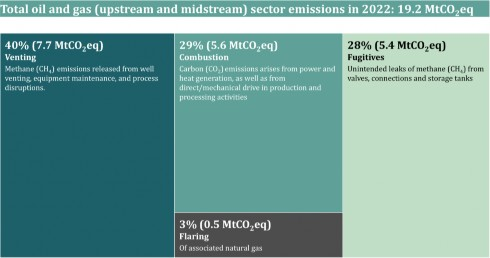
SECTORAL PATHWAYS
The main emission types in the oil and gas sector are CH4 and CO2, which drive the selection of bespoke decarbonization measures to abate each type of emission. To mitigate methane emissions, measures that enhance energy efficiency and involve structural modifications to current operations are implemented. For the reduction of CO2 emissions, strategies such as electrification and carbon capture, utilization, and storage (CCUS) are employed, focusing on the use of lower-emission energy sources.
Most oil and gas players in Azerbaijan (mainly international majors), as well as SOCAR, are signatories of the Oil & Gas Decarbonization Charter (OGDC), launched during COP28. This charter aims to achieve Zero-Routine flaring by 2030 and near-zero methane emissions by 2035. Furthermore, OGDC signatories commit to reaching Net-Zero in all operations by 2050.
In line with its established commitments, the upstream oil and gas assets are on the way to achieve zero-routine flaring by 2030 (some amount of safety flaring will remain – to be tackled by venting reduction initiatives and offsetting). Further, the country’s oil and gas sector will be decarbonized through a balanced transition, considering national energy security and economic development goals.
MITIGATION PLAN
Decarbonizing the oil and gas sector would require a comprehensive set of measures and technological choices. Each of the selected decarbonization measures would include a specific approach to address emissions. These choices will also vary by their application, abatement potential, and pace of introduction. The list of emissions reduction measures is summarized in Table 7.
ENERGY EFFICIENCY
Energy efficiency initiatives concentrate on reducing emissions by optimizing the fuel consumption of specific equipment types through targeted projects. Given their straightforward implementation and the resultant operational expenditure savings, these measures are anticipated to be adopted in the short term.
LEAKAGE DETECTION AND REPAIR
Leakage detection and repair (LDAR) projects are designed to address fugitive emissions, which are unintentional methane emissions into the atmosphere due to leakages, by identifying and repairing their sources. The abatement potential and cost of LDAR projects vary depending on the accessibility of the emission sources and the extent of repair work required.
ENGINEERING SOLUTIONS (VENTING REDUCTION)
Engineering solutions aim to abate venting emissions, a controlled process of direct methane emissions into the atmosphere due to operational issues and specifications. Various engineering solutions are planned to eliminate gas use, prevent equipment failure, and upgrade operational practices to avoid venting (also leading to safety flaring reduction).
RES ELECTRIFICATION AND SCOPE 2 REDUCTION
RES electrification and scope 2 reduction initiatives target the decarbonization of combustion-related CO2 emissions and are closely linked with advancements in the power sector. These measures involve the electrification of natural gas turbine-driven power, machine drives (e.g., gas turbine-driven pumps and compressors), and heat generation, utilizing a grid powered by RES such as solar or wind. This approach addresses both direct (Scope 1) and indirect (Scope 2) carbon dioxide emissions, thereby significantly contributing to overall emission reduction efforts.
Table 7. Oil and gas sector mitigation measures
Themes |
Planned measures |
Planned measures by 2035 |
|
Energy efficiency |
|
LDAR |
|
|
Engineering solutions |
|
RES and scope 2 reduction |
|
Achieving decarbonization target by 2035 in the oil and gas sector will require financial support, with the largest portion allocated to methane- reduction solutions and captured gas re-route pipeline infrastructure to fulfill the OGDC’s targets.
Transferring methane-measurement technologies to the country, such as satellite technologies, infrared cameras, and methane-abatement technologies, as well as access to funding and capability building, will be vital to unlocking sectorial decarbonization. Additionally, the development of RES in the power sector and grid upgrades will be essential for achieving NDC 3.0 target by addressing CO2 emissions from combustion. To tackle last-mile solutions, international partnerships, technological advancements, capability building through upskilling and reskilling will be critical.
The power sector plays a crucial role in the country's economic framework by supplying reliable and uninterrupted energy to residential and commercial consumers, and major sectors including oil and gas, agriculture, and industry sector (e.g., metals and non-metallic minerals).
The installed power generation capacity in 2022 stood at 8.0 gigawatts (GW), formed mostly with natural gas-fired power plants. Out of the total 29.0 terawatt-hours (TWh) of electricity generated in 2022, 93.6% (27 TWh) was generated from natural gas, consuming 6.5 billion cubic meters (bcm)13. Hydropower accounted for 5.2% of the generation mix, while other sources contributed minimally, with solid waste incineration providing 0.7%, while solar and wind contributed by 0.5% of total generation. 42.4% of gas-fired generation came from combined cycle gas turbines (CCGTs), operating at higher efficiency, while 57.6% was generated by less efficient plants. Additionally, hydropower plants faced reduced capacity factors due to water scarcity.
Given that the power sector primarily relies on natural gas as its energy source, it emerges as the country’s largest contributor to GHG emissions, emitting 14.4 MtCO2eq in 2022, or 21% of total emissions (Figure 9). There is significant potential to enhance efficiency and expand the use of sustainable energy sources such as renewable energy to reduce GHG emissions.
The sector has made significant progress in reducing emissions over the last two decades by shifting from fuel oil to natural gas. Additionally, unlike many other countries, Azerbaijan does not use coal for power generation, resulting in a relatively lower carbon footprint per kilowatt- hour (kWh) produced. However, there is still substantial potential to further improve efficiency and increase the adoption of RES.
Figure 98. Power sector activity structure and emissions level in 2022
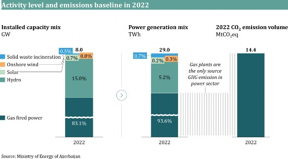
SECTORAL PATHWAYS
Considering that decarbonization efforts in other high-emission sectors are primarily driven by electrification, particularly in industrial processes, buildings, and transportation, electricity demand is expected to increase. This increase would lead to higher emissions from the current conventional power system. The implementation of this pathway is contingent upon solutions for the limitations mentioned above, cooperation with international partners as well as securing international funding for the least economically attractive levers. These goals are planned to be achieved through various measures designed to transform power generation into a more sustainable and environmentally friendly sector. Key abatement measures include upgrading power transmission and distribution infrastructure, expanding renewable energy capacity with a focus on solar and wind, deploying long-duration energy storage (LDES) batteries, replacing Open-Cycle Gas Turbines (OCGTs), as well as gas engine plants with CCGTs. Together, these measures are expected to drive notable emission reductions while ensuring energy security and grid reliability.
TRANSMISSION AND DISTRIBUTION (T&D) UPGRADES
A critical lever in the country’s energy transition is upgrading the grid infrastructure to remove the current limitations to meet growing electricity demand and enable renewable energy generation. T&D modernization will focus on reinforcing high- voltage transmission lines, constructing new substations, and upgrading existing ones with advanced automation and digital control systems. Similarly, the distribution network will also be improved by upgrading transformers, enhancing automation, and implementing smart grid technologies. These upgrades will enable higher integration of RES into the national grid on top of BAU plans, allowing for a more significant contribution from solar and wind power. As decentralized energy generation and electric vehicle (EV) adoption grows, the distribution network will be key in managing these complexities by efficiently handling electricity flow ensuring the system remains reliable and flexible. Additionally, operational improvements to the distribution network can potentially reduce technical losses via further optimizing electricity generation and reducing the sector’s total emissions.
RENEWABLE POWER CAPACITY
Another important lever involves expanding renewable energy generation capacity to maximize electricity production from clean energy sources. Due to its more economically attractive potential, solar power generation will be prioritized, followed by the utilization of wind power based on its availability. The country has significant potential for both onshore and offshore wind power. Currently, onshore wind is more economically feasible and, following solar, is prioritized for development. Offshore wind will be considered as a subsequent option if technological advancements and market conditions improve its economic viability over time.
LONG-DURATION ENERGY STORAGE BATTERIES (LDES)
To ensure a sustainable energy supply, LDES batteries will need to be installed. These batteries will store excess energy produced from renewable sources, ensuring stable and reliable energy supply. By enhancing the integration of renewables, this measure will help unlock the transition to a steadier renewable energy system by 2035.
MITIGATION PLAN
The table below provides an overview of the power sector’s planned mitigation measures (Table 8).
Table 8. Power sector mitigation measures
Themes |
Planned measures |
Planned measures by 2035 |
|
|
Transmission and Distribution (T&D) upgrades and energy efficiency |
|
|
Renewables expansion |
|
Implement upgrades to the power transmission and distribution network to accommodate growing electricity demand, and to enable increased renewable integration
Implement grid control mechanisms to minimize technical losses in electricity supply
Increase renewables generation share, primarily driven from solar and onshore wind power
Expand solar power capacity
Expand onshore wind power generation capacity
With strategic plans of exporting green energy, including electrons and molecules, the country has linked its economic plans closely to domestic decarbonization efforts, including at scale deployment of offshore wind capacities, electrolyzers, and other infrastructure development and upgrades. This strategy not only supports global decarbonization initiatives but also enhances the domestic energy landscape by integrating RES and further reducing the reliance on high-emission fuels. Given that variable renewable energy solutions mentioned in the decarbonization pathway would also be capable of producing electricity more than it is demanded, excess supply of energy is intended to be diverted to export markets, which will be strengthened further with the introduction of battery and storage facilities, thus contributing to regional decarbonization efforts.
Attaining to NDC 3.0 target will require substantial investment with the largest portion of capital expenditure (CapEx) allocated to renewable power. Significant CapEx will also be necessary for grid upgrades and the expansion of solar capacities. However, these investments will yield operational expenditure (OpEx) gains through the shift from higher-cost gas-fired power plants to RES, reducing the marginal costs of electricity production.
The buildings sector plays a crucial role in meeting the energy needs of the population and supporting various economic activities, encompassing a wide range of structures from residential apartments to commercial buildings. Specifically, the sector comprises approximately 2.1 million residential dwellings, accommodating over 10.1 million residents and 0.5 million commercial, institutional, and industrial buildings. The total enclosed residential area is about 220 million square meters, while the commercial, institutional, and industrial area spans 47 million square meters.
Natural gas is the primary energy source for buildings. In 2022, the residential segment consumed approximately 4.0 bcm natural gas, while commercial, institutional, and industrial segments used approximately 0.5 bcm. This consumption resulted in emissions amounting to approximately 10.0 MtCO2eq, making buildings the second highest-emitting sector in the country in 2022 constituting 14% of overall emissions.
Space heating is the primary source of sector emissions in all segments with 72% (7.2 MtCO2eq) of total emissions coming from residential dwellings and 10% (1.0 MtCO2eq) coming from commercial, institutional, and industrial buildings. Water heating is the second biggest source of emissions in all segments with 13% (1.3 MtCO2eq) of emissions coming from water heating for residential dwellings and 2% (0.2 MtCO2eq) coming from water heating for commercial, institutional, and industrial segments. Cooking represents 3% of the sector’s emissions, amounting to 0.3 MtCO2eq (Figure 10).
Figure 90. Buildings sector GHG emissions breakdown in 2022, MtCO2eq
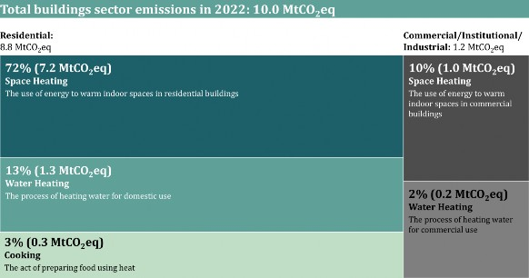
To manage emissions, various policy levers and strategic initiatives have been implemented to improve the sector’s emissions level across recent years (Table 9). More detailed information is available in Section 6.2. Regulations and Policies.
Moreover, various demand-side management (DSM) and energy efficiency initiatives are continuously being implemented to improve energy consumption patterns and promote sustainable development. The DSM program is supported by several legislative frameworks, most notably the Law on Rational Use of Energy Resources and Energy Efficiency, which came into effect in July 2022. This law establishes comprehensive rules for conducting energy audits, managing energy services and setting efficiency requirements across production, transmission, distribution, storage and consumption of energy. The legislation also includes measures to raise public awareness and provides incentives for adopting energy-efficient technologies. In addition, the implementation of the Energy Management System (2022) in accordance with the ISO50001 standard, is required by law. This mandates the appointment of energy management in i) economic entities with an annual energy consumption exceeding 1,000 tons of oil equivalent, and ii) in non-residential buildings with a construction area of at least 10,000 square meters or an annual energy consumption of more than 250 tons of oil equivalent. It also mandates that energy audits are conducted every three years.
Another significant factor contributing to inefficient energy use is suboptimal insulation of buildings from the Soviet era. These buildings, have higher energy consumption for heating and cooling and being quite old, are partially included in the country’s demolition and renovation plans.
STANDARDS FOR NEW BUILDINGS
To improve the energy performance of newly constructed buildings and the energy efficiency of equipment within these structures, specific laws setting standards for buildings have been introduced. Stricter energy performance requirements are defined by the Minimum Energy Efficiency Standards for Buildings (August 2023) which ensure the use of modern insulation, heating, and cooling technologies, along with the incorporation of RES. Better energy management is also encouraged by the Thermal Insulation of Equipment and Pipelines regulation (April 2023), which ensures that buildings' heating and cooling systems are adequately insulated to minimize energy loss.
INSTALLATION OF RENEWABLE ENERGY SYSTEMS
The incorporation of renewable energy into the buildings sector has recently received significant attention. To encourage the use of renewable energy in urban areas, the Rooftop Solar Energy System Installation Requirements (November 2023) set forth standards for integrating solar energy systems into building designs. Stricter insulation and rooftop solar installation standards are required for liberated territories.
Table 98. Buildings sector current policy and measures
Area |
Current measures |
|
Improvement of energy efficiency |
|
Standards for new buildings |
|
Installation of renewable energy systems |
|
SECTORAL PATHWAYS
To achieve decrease GHG emissions, two themes are deployed: (1) electrification of equipment currently powered by natural gas, and (2) increasing energy efficiency.
ELECTRIFICATION OF EQUIPMENT POWERED BY NATURAL GAS
A major goal for 2035 is to ensure the transition of equipment powered by natural gas to equipment powered by renewable electricity. To this end, buildings are expected to install electric air-to- water heat pumps and electric stoves, both powered by renewable electricity. Heat pumps, which are approximately three times more efficient than natural gas systems, will provide heating and hot water, reducing reliance on natural gas. Electric stoves, which use electromagnetic energy to heat cookware, will replace gas stoves, cutting down on energy waste and further decreasing the use of natural gas.
MITIGATION PLAN
INCREASING ENERGY EFFICIENCY
To increase the energy efficiency of buildings is critical to achieve decarbonization target by 2035. First, buildings are expected to be retrofitted with high-performance insulation materials, such as advanced thermal insulation and double-glazed windows. Improved insulation will increase energy efficiency, reducing heating and cooling energy demand. Secondly, switching to LED lighting and promoting high-efficiency appliances, such as refrigerators, washing machines, and dishwashers, will further lower energy consumption. Lastly, installing high-efficiency air conditioning systems that are designed to meet global energy standards, will also enhance cooling performance while using less electricity.
A detailed emission mitigation plan, including specific actions and measures for emission reduction, is critical to achieving decarbonization targets by 2035 (Table 10).
Table 10. Buildings sector mitigation measures
Themes |
Planned measures |
Planned measures by 2035 |
|
|
Electrification of equipment powered by natural gas |
|
|
Increasing energy efficiency |
|
Achieving NDC 3.0 target will require substantial capital investments to install electric heat pumps, electric stoves, advanced insulation, LED lighting, and high efficiency appliances and air conditioning in existing and new buildings in the buildings sector. Despite higher upfront costs, electric heat pumps are expected to deliver OpEx savings through reduced energy consumption, due to their approximately three times greater energy efficiency compared to gas boilers.
The transportation sector is an essential component of the country’s economy, contributing approximately 6%14 to the GDP. The well-developed transportation network includes roads, domestic railways, aviation, and maritime transport. The sector comprises 2,704 kt of annual fuel consumption by road vehicles powered by gasoline, diesel, CNG/LPG, and electricity. In 2022, domestic railways, aviation, and maritime transport collectively consumed 220 kt of diesel, aviation fuel, and maritime oil.
Azerbaijan’s transportation sector has experienced a considerable growth in emissions, reflecting broader economic expansion, population growth, and increased vehicle ownership. In 2022, emissions reached 9.3 MtCO2eq, constituting 13% of the country’s overall GHG emissions. Road transportation is the primary source of these emissions, accounting for 92% of the total with 8.6 MtCO2eq, mainly driven by gasoline and diesel from internal combustion engines (ICE). Domestic aviation represents 5% of the sector’s emissions, equating to 0.5 MtCO2eq, and domestic maritime transport and railways represent 2% and 1% of the sector’s emissions, respectively. This is primarily due to marine fuel consumption in shipping and diesel locomotives in railways (Figure 11).
Figure 1110. Transportation sector GHG emissions breakdown in 2022
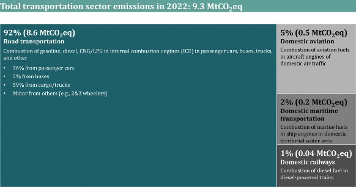
To manage growth sustainably, various policy levers and strategic initiatives have been implemented over the years to improve transportation sector emissions (Table 11).
TRANSPORTATION PLANNING AND PLANNED FLEET UPGRADES
As a result of the introduced “State Program on the Development of Transportation System in the Republic of Azerbaijan (2006-2015)” and “State
Program for Renewal and Development of the Road Network in the Republic of Azerbaijan (2006-2015),” several highways, roads, and parking lots were constructed and expanded, with improvements to the street-road network, to reduce traffic congestions and, consequently, GHG emissions.
Concerning air transportation emissions, the aviation segment is currently undergoing fleet renewal to enhance fuel efficiency and lower GHG emissions. Between 2005 and 2015, the fleet was modernized through new aircraft replacements. Beginning in early 2023, the aviation fleet will undergo further renewal with the addition of 20 new aircraft, contributing to further emission reductions.
Additional measures to support the development of an efficient transportation network include expanding railway transport for passenger mobility, developing and expanding the metro system, and increasing awareness of “eco-driving” for passenger and freight transportation.
ENVIRONMENTAL EMISSION STANDARDS
Driven by the commitment to reducing emissions, the Cabinet of Ministers implemented the Euro-4 emission standard on April 1, 2014, as a regulatory measure. Additionally, diesel and gasoline produced at the Heydar Aliyev Oil Refinery have already been brought up to Euro-5 standards. Moreover, based on key decisions made on March 27, 2024, regarding the use of taxis, taxis are now required to adhere to a minimum of Euro-5 ecological norms and use vehicles less than 15 years old. To further improve the age of the fleet, a limit is imposed on the import of passenger cars older than 10 years from their manufacturing date.
ELECTRIFICATION OF TRANSPORTATION
To boost energy efficiency and improve electric transport infrastructure in Azerbaijan, the government is planning the early adoption of public transport electrification. For electrification purposes and to potentially establish local manufacturing capabilities, 160 electric buses were purchased, and the installation of chargers will be completed by the end of 2024 in Baku city routes. Moreover, to further encourage the adoption of electric vehicles, the government has been implementing various incentives and tax exemptions for importing and selling electric vehicles. In particular, the import and sales of electric cars and chargers are exempt from VAT, with the import duty tariff set at 0% for factory production of vehicles up to three years after production.
Table 9. Transportation sector current policy and measures
Area |
Current measures |
Transportation planning and planned fleet upgrades |
|
Environmental emission standards |
|
Electrification of transportation |
|
Sectoral pathways
Several pathways and enablers have been identified, such as enhanced electrification technologies, heavy batteries, and longer-range long-haul trucking. These enablers allow for faster adoption and considerable emission reductions in the road transportation sector.
Energy transition in the transportation sector will target three key objectives: 1) reduction of distance (km) traveled by road transportation, 2) reduction of emission intensity per kilometer traveled by enhancing the efficiency of the current fleet and introducing cleaner fuel sources, 3) achieving an optimal modal shift by introducing new mobility solutions and increasing the share of public transportation.
STRUCTURAL AND OPERATIONAL UPGRADES
A primary goal is reducing overall GHG emissions from urban mobility through the sustainable expansion of public transportation usage. This will be achieved through modernizing infrastructure, introducing micro-mobility solutions, and enhancing public transportation's attractiveness and accessibility to reduce public transit travel time.
ELECTRIFICATION
Significant decarbonization of the transportation sector requires a gradual phase-out of ICEs,
replacing them with electric and hybrid vehicles. To encourage this shift, substantial investments in electric charging infrastructure and incentive mechanisms will be required.
BIOFUELS
Biofuels need to be utilized in transportation. Additionally, regarding aviation and maritime transport, exploring alternative fuel sources and promoting the use of biofuels will be essential for reducing GHG emissions from these transportation segments, by further increasing the share of this technology.
MITIGATION PLAN
To achieve decarbonization target by 2035, a detailed emissions mitigation plan is critical,
which includes specific actions and measures for emission reduction (Table 12).
Table 102. Transportation sector mitigation measures
Themes |
Planned measures |
Planned measures by 2035 |
|
Structural and operational upgrades |
|
|
Electrification |
|
Biofuels |
|
The transportation sector’s shift to sustainability requires significant amounts of CapEx, mainly for EV infrastructure, such as charging stations and grid upgrades. Although upfront costs are higher, OpEx savings are expected from EVs due to lower fuel and maintenance costs compared to ICE vehicles, along with improved efficiency.
By addressing key challenges and implementing strategic initiatives, the country is set to significantly reduce emissions from the transportation sector and contribute to global climate goals and environmental outcomes.
The industry sector is an important source of economic growth and jobs, with multiple at-scale industrial companies, contributing up to 25% of the country’s non-oil and gas GDP. This contribution and growth have been driven by government policies as well as investments from the private sector and SOEs. This continued growth is projected to translate into higher GHG emissions, making decarbonization of this sector one of the main priorities in achieving emissions targets.
In 2022, this sector was primarily composed of: downstream oil and gas products, production of non-metallic minerals such as cement and metals such as steel and aluminum. Downstream oil and gas products are mainly produced by gas processing plant, petroleum refinery, petrochemical plants, methanol plant, and urea plant. This segment has experienced strong growth over the past decade, with increased production and export volumes.
Metallic and non-metallic material production is another key segment in this sector with non- metallic minerals producing 2.7 million tons of clinker in 2022 achieving over 50% growth in the
last 10 years, whereas metals segment totaled around 0.8 million tons of metal production in 2022, primarily from steel and aluminum production.
In 2022, the industry sector generated 8.9 MtCO2eq of emissions, driven by the use of emission fuel in energy and raw materials across six segments. Downstream oil and gas products, as well as non-metallic minerals, are two major contributing segments, collectively responsible for 6.3 MtCO2eq in total sector emissions. Other contributors include metals, chemicals, and food and beverage which together account for an additional 2 MtCO2eq. The remaining 0.6 MtCO2eq was generated by other industry segments such as construction and construction materials (Figure 12).
It should be noted that the industry sector is often considered hard-to-abate in terms of GHG emissions, primarily due to the high temperatures required in industrial processes. These processes often rely on hydrocarbons and produce gases from chemical reactions that may also contain fluorine.
Figure 12. Industry sector GHG emissions breakdown in 2022, MtCO2eq
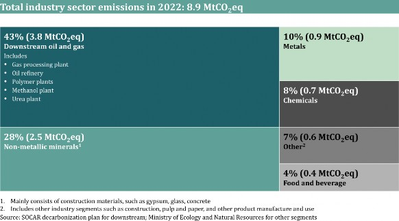
Industrial activity growth is prioritized in the country and is evident in its current measures and policies targeted at the sector development. However, some policies are now also emphasizing sustainable growth and decarbonization efforts. As the country progresses towards decarbonization, further policy improvements would be introduced to accelerate the pace of decarbonization. More detailed information is available in Section 6.2. Regulations and Policies.
INCREASING ENERGY EFFICIENCY AND SWITCHING TO CLEANER FUELS
Various state programs, including the 2015-2020 Industry Development Plan, and the 2022-2026 Socio-Economic Development Plan, include policies and measures to improve energy efficiency. These policies have translated into concrete actions, such as the establishment of a new Direct Reduced Iron (DRI) facility, which will use natural gas (and later can use carbon capture or hydrogen) as a fuel rather than coke or coal - the traditional fuel used in blast furnace for iron production - and will later incorporate carbon capture or hydrogen.
CONCENTRATION OF INDUSTRIAL ASSETS IN INDUSTRIAL PARKS
Industrial parks serve to geographically concentrate industrial assets, thereby easing future decarbonization efforts. For example, recycling heat and waste, CCUS, and electrification at-scale become easier when industrial assets are geographically concentrated and use shared infrastructure. Multiple industrial parks have been established in the past decade, with policies aimed at continuing this trend in an effort to produce 15% of the sector’s output within these parks (Table 13).
Table 11. Industry sector current measures
Area |
Current measures |
Increasing energy efficiency and switching to cleaner fuels |
|
Concentration of industrial assets in industrial parks |
|
SECTORAL PATHWAYS
To achieve abatement, actions need to be taken across three main pathways: energy efficiency, operational upgrades, and electrification.
ENERGY EFFICIENCY
Enhancing energy efficiency will be one of the keys unlocks for decarbonizing the industry sector, namely downstream oil and gas segment. By increasing the output per unit of energy consumed, industries would significantly reduce their emissions. This will be achieved through the modernization of equipment, machinery, and facilities.
OPERATIONAL UPGRADES
In the downstream oil and gas and alumina refining segments, incorporating advanced technologies into operations would reduce emissions. For example, in downstream oil and gas, the application of Leak Detection and Repair (LDAR) significantly contributes to decarbonization by reducing fugitive methane emissions through timely detection and repairs.
ELECTRIFICATION
Many segments of the industry rely on high emission fuel combustion to operate, where electrification of equipment and machinery is key to unlock full decarbonization potential. For instance, in food and beverage and chemicals industries, gas boilers would be substituted with high-temperature heat pumps and electric boilers for generating low-pressure and high-pressure steam, respectively. Similar applications exist in alumina refining within the metals segment and downstream oil and gas. Electrification with increased penetration of renewables in the energy grid will translate to the decarbonization of fuel consumed by industrial assets.
MITIGATION PLAN
To reach decarbonization target by 2035, it is essential to have a comprehensive emissions mitigation strategy that outlines specific actions and measures for reducing emissions (Table 13).
Table 12. Industry sector potential mitigation measures
Themes |
Planned measures |
Planned measures by 2035 |
|
Energy efficiency |
|
Electrification |
|
Operational upgrades |
|
Achieving decarbonization target by 2035 in the industry sector will require additional CapEx, considering the implementation of high-cost pathways and measures. The majority of the OpEx are driven by the chemicals and non-metallic minerals segments, which are aimed at significant electrification and advanced technology.
Technological advancements such as inert anode technology, development of RES in the power sector and grid upgrades, and capability building through upskilling and reskilling will be key to unlocking sectorial decarbonization.
As the country’s population and industrial activities continue to grow, managing waste presents an important opportunity for environmental improvement. As of 2022, total generated municipal solid waste (MSW) and industrial waste amounted to 3.9 Mt, resulting in 395 kg of waste generated per capita. Two primary sources of solid waste—household and industrial activities—contributed to 67% and 28% of the total waste collected within the country, respectively. The remaining 5% was derived from other sectors, including agriculture, fisheries, and forestry. This distribution highlights the significant impact—and opportunities for improvement—of both domestic and industrial activities on overall solid waste management challenges. Additionally, wastewater, including domestic and industrial effluents, generates GHG emissions when treated or disposed of in anaerobic conditions. In 2022, approximately 260 million m3 of wastewater was treated.
Overall, the waste sector was responsible for emitting 4.9 MtCO₂eq, accounting for approximately 7% of the country's total GHG emissions in 2022. One of the primary contributors to these emissions is methane, which is released during the anaerobic decomposition of organic materials. Emissions from solid organic waste disposal from such sites constituted 50% of total emissions in the waste sector, with 2.4 MtCO₂eq in 2022. Furthermore, the wastewater treatment process contributed 2.4 MtCO2eq to overall sector emissions, primarily from methane and N2O gases arising from the anaerobic decomposition and nitrification-denitrification processes integral to wastewater treatment (Figure 13).
In addition to waste treatment and disposal, waste incineration is another form of waste management that produces less CO2 emissions per kg of waste compared to open landfills. In 2022, waste incineration at the Balakhani solid waste incineration plant generated 231.4 GWh of electricity and emitted 0.01 MtCO2eq in GHG emissions, which is estimated to be approximately 84,000 tCO2eq less than what would have been produced in open landfills. These emissions are combined with the power sector’s emissions, as they are produced while generating power.
Additionally, CO2 emissions from burning biomass materials, amounting to 0.5 MtCO2eq, were excluded from the national total, as these biogenic emissions mainly come from the incineration of paper, food, and wood waste.
Figure 13. Waste sector GHG emissions breakdown in 2022
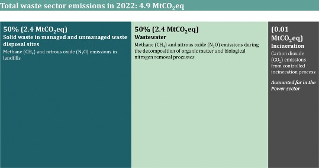
The Tamiz Shahar OJSC was established to enhance solid waste collection and treatment in Baku and in liberated territories. Furthermore, industrial waste is either sent to landfills or directly sold to recycling companies.
National Solid Waste Management Strategy includes implementing circular product designs and sorting technologies and enhancing waste separation at the source through awareness programs. Regarding wastewater, new treatment plants are planned for construction in the main districts of Gadabay, Astara, Dashkasan, Tartar, and Gazakh under the National Water Supply and Sewerage program (Table 13).
Table 13. Waste sector current policy and measures
Area |
Current measures |
|
Solid waste management |
|
Wastewater management |
|
Additionally, the COP29 Declaration on Reducing Methane from Organic Waste calls on national governments to cut methane emissions in the waste sector to help limit global warming to 1.5°C. This initiative promotes organic waste management, circular economy practices, and international cooperation. It aims to deliver health, environmental, and economic benefits while aligning with global climate goals and leveraging partnerships and public awareness for sustainable waste management.
SECTORAL PATHWAYS
NDC 3.0 establishes a pathway to substantially reduce waste sector emissions by 2035. To reach this abatement level, a comprehensive plan is needed that focuses on immediate reductions.
These pathways include implementing advanced waste management technologies and key enablers, such as securing international financial support, enhancing sorting initiatives, and upgrading infrastructure to achieve sustainable practices in solid waste disposal and wastewater management.
ANAEROBIC DIGESTION PLANTS
Anaerobic digestion (AD) plants are pivotal role in the pathway by converting organic waste into biogas, which can be used as RES and digestate. However, this requires structural changes, such as shifting behavior to more sustainable waste management practices and increasing the collection rate of MSW.
WASTEWATER TREATMENT CENTER
Establishing advanced wastewater treatment centers that utilize anaerobic processes can capture methane for energy use and significantly reduce wastewater GHG emissions. This requires upgrading existing wastewater treatment infrastructure and technological investments in anaerobic systems.
MITIGATION PLAN
Table 14 below outlines the planned mitigation measures for managing solid waste disposal and
wastewater treatment, including various initiatives and actions.
Table 144. Waste sector mitigation measures
Themes |
Planned measures |
Planned measures by 2035 |
|
|
AD plants |
|
Wastewater treatment centers |
|
By 2035, most of the CapEx will be directed toward building advanced sorting centers and technologies. Additionally, investments will focus on developing AD facilities and wastewater treatment centers. OpEx will cover the continuous operation and maintenance of these facilities, including labor, energy, and equipment upkeep for sorting centers and anaerobic and wastewater treatment plants. These investments are pivotal in reducing emissions and promoting sustainable waste management in the country.
Addressing key challenges and decarbonizing the country’s waste sector through AD and wastewater treatment presents a viable pathway to meeting its decarbonization goals.
The AFOLU sector focuses on the production of grains, fruits, vegetables, and various livestock products, including meat, dairy, and wool, and also encompasses land use, forestry, and soil management practices. As a sector, it is the country’s largest employer providing jobs for 36% as of 2022.15 Overall, in the past decades agricultural production has been growing at a CAGR of 11% since 2000 and is expected to continue to grow mainly based on land availability and food needs of the population.
Agricultural lands covered about 4.8 mln hectares in 2022. Across these lands, the total number of livestock was approximately 10.5 mln heads, consisting of mainly cattle and sheep as of 2022 (Figure 14).
Figure 11. Total land fund and livestock breakdown as of 2022
In 2022, the agriculture sector emitted a total of 8.0 MtCO₂eq (Figure 15), with emissions stemming both from livestock and crop production activities releasing CO₂, CH4, and N₂O. Out of all emissions, CO₂ emissions are largely linked to energy use in farm machinery, particularly diesel consumption, while methane and N₂O emissions mainly come from enteric fermentation in ruminant animals and the anaerobic decomposition of manure. Enteric fermentation and energy-related emissions are the largest contributors, accounting for 64%16 and 16% of total sectoral emissions, respectively. Cattle and sheep are responsible for 67% and 27% of enteric fermentation emissions, underscoring their dominant role in agricultural emissions.
Alongside these emissions, the sector also has a stabilizing element in the form of the Land Use, Land-Use Change, and Forestry (LULUCF) sector, which acts as a carbon sequestration mechanism. In 2022, LULUCF contributed a net carbon sequestration of 5.2 MtCO₂eq, with forest land emission removals accounting for 3.6 MtCO₂ across 1.04 million hectares. This sequestration has played a significant role in offsetting the overall emissions impact of the agriculture sector.
Together with LULUCF, the net emissions of the AFOLU sector were 2.8 MtCO₂eq in 2022.
Figure 15. AFOLU sector GHG emissions breakdown in 2022, MtCO2eq
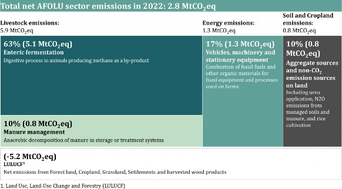
Despite the growth in agricultural activity, forest land expansion under the Land Use, Land-Use Change, and Forestry (LULUCF) segment is expected to play a crucial stabilizing role in absorbing emissions. The projected expansion of approximately 30 thousand hectares of forest land by 2026 will increase the total forest coverage to 12.3%, forming a key part of the country’s broader emission stabilization efforts. The increase in forest land is supported by Azerbaijan’s 2022- 2026 Socio-Economic Development Strategy, which emphasizes forest area expansion and the promotion of sustainable agricultural practices to mitigate overall emissions.
SECTORAL PATHWAYS
Emission reductions in this sector will be realized through a combination of abatement themes touching upon the major sources, such as livestock and energy use, while significantly boosting carbon removals, primarily driven by the expansion of forest land within the LULUCF framework.
METHANE REDUCTION
Addressing methane emissions from livestock, particularly through advanced feed additives and dietary practices, will be key in the agriculture sector. However, since most of the livestock in the country are free-range and not managed in feedlots, the overall impact may be limited. Medium- and large-scale composting facilities will also aid in controlling emissions from manure. Additionally, optimizing livestock size by increasing the portion of larger breed animals could help reducing methane emissions.
ELECTRIFICATION OF MACHINERY
Transitioning from diesel-powered agricultural machinery and equipment to electric alternatives will be another major step toward emissions reduction. This shift will encompass not only mobile vehicles but also stationary equipment, such as water pumps, irrigation systems, grain builders and crop processing equipment, refrigeration systems for the storage of agricultural products, and other essential machinery. However, the success of this transition will depend on developing the necessary infrastructure to support the widespread adoption of electric vehicles and machinery.
SMART AGRICULTURAL PRACTICES
Adopting improved farming techniques, such as reducing fertilizer overuse, no-tillage, and precision agriculture, will help further lower emissions while boosting efficiency and sustainability across the sector. Additionally, given the general challenge of soil erosion due to country’s mountainous landscape, the establishment of a smart systems including detailed land information system is considered an important measure to enhance the effectiveness of these practices and improve long-term sustainability outcomes.
LULUCF
Expanding forest land will play a pivotal role in the country’s decarbonization efforts, significantly enhancing carbon sequestration within the AFOLU sector. Beyond achieving target in AFOLU, LULUCF offers an additional carbon removal capacity, providing extra sequestration potential that could support the decarbonization efforts of other sectors as well, contributing to broader national sustainability goals.
MITIGATION PLAN
To reach the decarbonization target by 2035, it is essential to have a comprehensive emissions mitigation strategy that outlines specific actions and measures for reducing emissions (Table 14).
Table 14. AFOLU sector mitigation measures
Themes |
Planned measures |
Planned measures by 2035 |
|
Electrification of machinery |
|
Methane reduction |
|
Forestry |
|
Achieving emission reductions in the AFOLU sector will require targeted capital investments, particularly in grain-processing technologies and the electrification of machinery. The shift to electric machinery will also necessitate the development of EV infrastructure, including charging stations and battery storage, requiring additional investments. Furthermore, annual operating expenses will be influenced by several factors, with seaweed and 3-NOP additives being the most significant contributors to operational costs as they are key to reducing methane emissions. The successful implementation of these measures is contingent on ensuring they do not negatively impact agricultural productivity.
Successful implementation of decarbonization initiatives requires addressing infrastructure requirements, including power grid upgrades, electric vehicle charging infrastructure (EVCI), and other minor components (e.g., methane transportation and storage and waste sorting facilities). These infrastructure enablers will help unlock decarbonization across sectors (Figure 16).
Figure 1612. Impact of infrastructure requirements across sectors
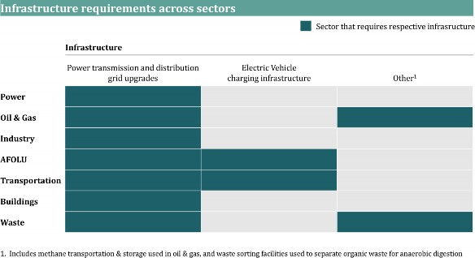
POWER TRANSMISSION AND DISTRIBUTION GRID UPGRADES
As sectors transition from high emission fuels to electricity to meet their energy needs, the power grid will have to develop to deliver this increased demand to end consumers. The COP29 Global Energy Storage and Grids Pledge commits to deploying 1,500 GW of energy storage and enhancing grid capacity by 25 million kilometers by 2030, aiming to support the transition to clean energy and achieve global net-zero emissions by 2050. This initiative emphasizes international collaboration, social inclusion, and working with private sector capabilities. It also recognizes the importance of i) modernizing grid infrastructure and cost-effective energy storage technologies in integrating renewables and ii) enhancing energy security.
Required grid upgrades are separated into two main areas. Firstly, improvements will be necessary to increase the uptake of renewables in the energy mix. This includes installing inverters to integrate renewable energy into the grid, applying smart grid technologies to match supply and demand, and managing the impacts of distributed power generation, such as reversed power flows. Additionally, transformers will be crucial for managing voltage levels across both transmission and distribution (T&D) networks, ensuring stability as capacity increases and more decentralized renewable sources are integrated.
Secondly, the grid will need to handle larger loads. This requires modernization, capacity increases, and the rollout of new substations, transformers, and lines. Demand-side management (DSM) will also be vital for managing local peaks, and efficient power storage systems will help align supply with demand.
Upgrades to the grid will need to be phased in line with the electrification of sectors, ensuring that power T&D do not become bottlenecks.
ELECTRIC VEHICLE CHARGING INFRASTRUCTURE (EVCI)
Increasing uptake of EVs in the coming decades will mitigate the effects of high-emission fuel combustion in both transportation and agriculture. To facilitate this transition, mass rollout of EVCI is required to position electric vehicles as a convenient and accessible alternative to vehicles with ICEs (contingent on the availability of distribution grid capacity for increased electricity demand).
To reach a targeted share of electric vehicles, scaling of EVCI would need to accompany it.
OTHERS
Other infrastructure, such as methane transportation and storage and waste sorting facilities, will also be key in enabling decarbonization, albeit at a smaller scale.
At the same time, AD plants are expected to serve as a primary decarbonization lever in the waste sector. For these plants to have a reliable and sufficient source of feedstock, waste sorting facilities will need to be established. To meet the target, new facilities with increased capacity will need to be commissioned prior to 2030.
To achieve a successful decarbonization program, the following conditions need to be satisfied: ensuring proper finance mechanisms, setting robust regulations, enhancing existing technologies and innovation, developing capabilities, establishing effective governance, and adopting an Enhanced Transparency Framework (ETF).
Reaching the target of 40% reduction by 2035 will require substantial investments across sectors that focus on infrastructure, renewables, and advanced technologies. Subject to the country’s sustainable socio-economic development, these investments should be supported by a mix of international and local financing mechanisms, such as Foreign Direct Investment (FDI), Public- Private Partnerships (PPPs), Power Purchase Agreements (PPAs), and Multilateral Development Banks (MDBs), including concessional finance and grants, to propel economic growth, job creation, and development of advanced capabilities.
A comprehensive policy framework encompassing cross-sectoral and sector-specific measures is essential to ensuring long-term emissions reduction and climate resilience while supporting the implementation of NDC 3.0.
Moreover, the deployment of advanced global technologies and equipment upgrades is crucial, including their transfers, conditional on feasibility and maturity levels. As supporting measures, R&D projects, education programs, and international collaborations are essential to improve technological capabilities and ensure access to cutting-edge solutions.
Combating climate change, enhancing sustainability, building additional capacity, and advancing technologies necessitate comprehensive plans to bolster workforce through education, technical assistance, upskilling and re-skilling, and advisory services, targeting diverse demographics.
A robust and adaptable governance mechanism and ETF will ensure adequate progress is made in implementing decarbonization pathways by setting clear targets, monitoring progress, addressing solutions, and adjusting investment strategies.
The country’s transitioning away from fossil fuels toward RES and a sustainable economy unlocks revenue potential – which can also be leveraged to further support the transition – attracts investment, creates high-value jobs, and encourages innovation.
To achieve 40% reduction by 2035 will require significant investments across sectors. These investments will focus on infrastructure, adaption of renewables, low-carbon and green energy solutions, and development of advanced technologies.
As a source of financing, Azerbaijan will rely on a mix of international support and investors, government support and local investors through mechanisms such as FDI, PPPs, and PPAs. Securing international financing through multilateral development banks (MDBs) and climate investment funds, including highly concessional finance and grants, will be critical to supporting the country to reach decarbonization target. The scale of and the need for the financial support for this NDC 3.0 sheds additional light on the vital importance of climate finance in general and the New Collective Quantified Goal (NCQG) set under COP29 in particular, once again. This aligns with COP29 Presidency’s Vision on “Enhancing Ambition and Enabling Action”, which links ambitious climate action plans, like this NDC 3.0, and similarly ambitious climate finance together as the two equally important pillars. Public finance from developed to developing country parties will be crucial in achieving net-zero goals.
In line with COP29 Presidency’s Action Agenda, the Climate Finance Action Fund (CFAF) initiative, to be funded by voluntary contributions from hydrocarbon producers, whether states or corporations, aims to drive public and private sector efforts in mitigation, adaptation, and R&D,
while providing highly concessional and grant- based funding for disaster-stricken developing countries. Moreover, Baku Initiative for Climate Finance, Investment, and Trade (BICFIT) will focus on the intersection of climate finance, investment, and trade by promoting green investment, supporting policy development, and facilitating expertise sharing through dialogue.
Azerbaijan also reserves the right to pursue cooperation under the Article 6 of the Paris Agreement to unlock financial support opportunities.
The commitment to decarbonization requires a comprehensive policy framework to achieve long- term emission decreases while sustaining climate resilience. This section outlines the key cross-sectoral and sector-specific policy and regulatory measures (currently enforceable and planned) that will support the implementation of NDC 3.0 (Figure 17).
Figure 17. Existing and planned policies and regulations to support
Azerbaijan’s decarbonization pathway
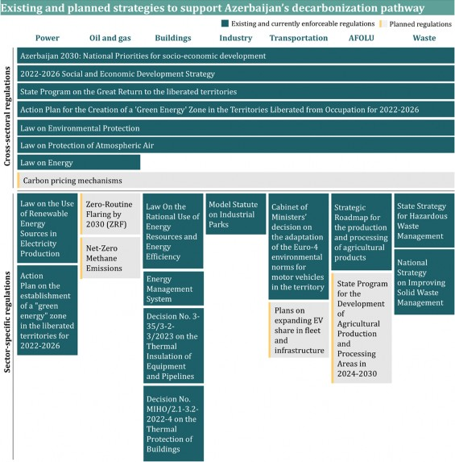
CROSS-SECTORAL REGULATIONS AND POLICIES
Major steps have already been taken regarding regulations and policy to strengthen Azerbaijan’s climate actions. A number of cross-sectoral policies are in place to support decarbonization across sectors. This cover preventing environmental damage by economic and other associated activities, energy entities, and air pollution.
“Azerbaijan 2030: National Priorities for socioeconomic development” and the “2022-2026 Social and Economic Development Strategy” highlight the importance of efforts to keep GHG emissions at a level consistent with international standards. They prioritize green energy, with increased use of renewable energy and green technologies, and a cleaner ecological environment with increased green areas and circulation of unused land.
The “Law on Environmental Protection” focuses on preventing harmful impacts of economic and other associated activities on ecological systems, supporting reduced GHG emissions, and achieving sustainable development goals. This legislation provides a legal basis for decarbonization efforts and targets to reduce emissions, ensuring that economic activities are aligned with environmental conservation.
The “Law on Protection of Atmospheric Air” aims to limit irreversible environmental damage from air pollution and highlights initiatives and efforts to protect air quality.
Impacting power and oil and gas sectors, the “Law on Energy” encourages energy entities to take measures to reduce the amount of GHG emissions released into the environment, prevent the pollution of land and water sources by high- emission fuel products, and mitigate the impact of other waste that harms the environment.
To achieve the target, Azerbaijan plans to design and implement regulatory frameworks to accelerate GHG emissions reduction across sectors, such as improving the environment in liberated territories and introducing carbon pricing mechanisms.
The priority directions of the “State Program on the Great Return to the liberated territories” and “Action Plan for the Creation of a 'Green Energy' Zone in the Territories Liberated from Occupation for 2022-2026” include constructing sustainable settlements, providing infrastructure, improving the ecological environment, and applying environmentally friendly technologies in the liberated territories.
The country is also exploring various carbon pricing mechanisms, including allowances, taxes, and incentives. Allowances, or cap-and-trade systems, set emission caps and create respective market mechanisms, encouraging companies to innovate and reduce emissions cost-effectively. Carbon taxes provide financial disincentives for emitting GHGs, while incentives and subsidies promote the adoption of low-carbon technologies.
Balanced carbon pricing mechanisms can drive domestic industries toward greener practices by incentivizing companies to reduce their carbon footprint through innovation and efficiency improvements. This stimulates the development of RES, energy-efficient technologies, and sustainable infrastructure. Revenue generated from carbon taxes or allowances can be reinvested into decarbonization efforts, such as funding public transportation projects, supporting clean technology R&D, and subsidizing low-carbon products and services. These funds can also mitigate the socio-economic impacts of transitioning to a low-carbon economy.
Additionally, harmonizing carbon pricing strategies with other countries could further strengthen the global response to climate change.
SECTOR-SPECIFIC REGULATIONS AND POLICIES
Major sector-specific regulations to address decarbonization efforts have already been introduced, mainly relating to increasing the renewable energy share in the power sector's technology mix and boosting energy efficiency in the transportation, industry, buildings, AFOLU, and waste sectors. The country is also planning to design and introduce sector-specific frameworks to accelerate the transition.
Power sector
Several initiatives have been implemented that primarily focus on transitioning from conventional gas turbines to more efficient CCGTs. These initiatives also include the construction of new hydropower and solar plants in accordance with the “State Program on the Great Return to the liberated territories” and “Law on the Use of Renewable Energy Sources in Electricity Production.” Additionally, the “Law on the Use of Renewable Energy Sources in Electricity Production” defines legal, economic, and organizational foundations and support mechanisms for using RES in electricity generation and regulates the relations arising in this field.
Several frameworks for the power sector have also already been approved (and are currently being detailed for implementation), paving the way in this sector. Regarding scaling renewable energy in the energy mix, the country is committed to developing its renewable energy potential, as stated in the “Socio-economic development strategy in 2022-2026,” by aiming to increase the installed capacity of renewable power to 30% in the country's overall energy balance by 2030. In accordance with the “Action Plan for the establishment of a ‘green energy’ zone in 2022-2026 in the liberated territories,” priority areas of Eastern Zangazur and Karabakh were approved for sourcing electricity entirely from local RES (which have a technical potential of around 10 GW) and the application of green technologies. Additionally, amendments are planned to the “Land Code” and the “Law on the Use of Renewable Energy Sources in Electricity Production” to grant permission for agricultural land to be designated as an area for RES without changing its category and without hindering its use for its intended purpose.
Buildings sector
Efficient use of energy resources and energy efficiency are regulated by the “Law on the Efficient Use of Energy Resources and Energy Efficiency.” The “Energy Management System,” per the ISO 50001 standard, mandates the appointment of energy management and mandatory energy audits to be conducted every three years in non-residential entities with a set annual energy consumption level.
Additionally, building codes are updated regularly regarding specifications for design standards to ensure energy efficiency, including, for example, decisions on thermal production in the buildings and thermal insulation of equipment and pipelines, according to relevant decisions.
Oil and gas sector
Oil and gas players in Azerbaijan are signatories of the Oil & Gas Decarbonization Charter (OGDC) launched during COP28. This charter aims to achieve Zero-Routine Flaring by 2030 (ZRF) among other measures. Furthermore, OGDC signatories commit to reaching Net-Zero in all operations by 2050.
Additionally, to reduce GHG emissions in the oil and gas sector, the “Law on the Management of Greenhouse Gases Emitted into the Atmosphere” has been drafted, which will regulate procedures for managing GHG emissions.
Transportation sector
The Cabinet of Ministers’ decision on adapting the Euro-4 environmental norms for motor vehicles has been implemented to improve environmental emission standards. Expansion of electric vehicles has already begun, with policies to incentivize purchases through tax reductions and subsidies. As a result of an amendment made to the Tax Code, starting from 2019, the import and sale of electric vehicles and chargers are exempt from VAT, with the import duty tariff set to 0% for a factory production period of up to three years.
Moreover, increasing the procurement and production of electric vehicles is planned. Electric bus use in public transport is also expected to grow over the years, with a target to operate 500 electric buses in 2025 and 1,100 by 2026, both by the state operator (BakuBus) and private operators within the route network. To supply Azerbaijan’s electric vehicle bus fleet through local production, a facility with an annual production capacity of 500 buses is expected to be constructed in cooperation with international companies. Additionally, the country aims to increase the fleet's share of electric vehicles by supporting charging infrastructure in the wider Baku metropolitan area, liberated territories, and other regions, with close support from Azerishig OJSC and Azerenergy OJSC. Moreover, charging stations for buses will be installed at four transportation exchange centers located at the final stops of bus routes.
Industry sector
In accordance with the “Model Statute on Industrial Parks” framework, established industrial parks must adhere to guidelines promoting innovation and sustainable advanced technologies. These practices aim to positively impact the environment and job creation and contribute to reducing greenhouse gas emissions.
AFOLU sector
Within the “Strategic Roadmap for the production and processing of agricultural products,” mechanisms for the sustainable use of agricultural lands and water resources, as well as the assessment of the environmental impact of land-use change, are established and being improved upon.
The country also plans to adopt the “State Program for the Development of Agricultural Production and Processing Areas in 2025-2030,” which will accelerate the transition from traditional farming to high-value-added intensive farming, with development along agricultural production value chains, leading to a reduction in GHG emissions from the AFOLU sector.
Waste sector
The “State Strategy for Hazardous Waste Management” ensures the implementation of necessary actions, such as waste reduction and recycling, to reduce environmental risks caused by hazardous waste accumulated over the years.
Additionally, new landfills for large settlements and treatment centers for wastewater are planned. Successful implementation of these efforts will create a waste management system for the collection, disposal, and neutralization of solid waste, ensuring that this process is carried out in an organized manner and thereby contributing to the sector's decarbonization.
Green economy transition necessitates the deployment of various state-of-the-art technologies that are being developed globally. Their adoption will depend on factors such as economic feasibility (conditional on receiving adequate support and financial resources), sufficient maturity (including necessary capacity building and technology transfer), and other implementation measures within the context of sustainable development (e.g., human capital capabilities) for large scale use. Key examples include electric vehicle charging, anaerobic digestion plants, and battery storage infrastructure.
To meet its decarbonization target, Azerbaijan is actively pursuing multiple projects and programs to enhance technological capabilities through R&D initiatives, expand the high-skilled workforce through education programs, and increase public awareness through community engagement and outreach activities. Additionally, the country is exploring opportunities to leverage emerging technologies—such as hydrogen and carbon removal technologies—and other potential technological breakthroughs for decarbonization. Close collaboration with international companies is also being established to ensure knowledge exchange and technology transfers.
Moreover, the COP29 Declaration on Green Digital Action calls on national governments and stakeholders to commit to using digital technologies to mitigate and adapt to climate change while addressing the environmental impact of these technologies, promoting digital inclusion, and enhancing data-driven decision- making. Working with digital technologies emphasizes collaboration, sustainable innovation, and the integration of digital sustainability into national climate policies to support global climate goals.
R&D INITIATIVES
A key component of the R&D strategy is enhancing collaboration with various academic and research institutions. For example, SOEs and private corporations are partnering with leading universities and research centers to advance research and deploy cutting-edge technologies in renewable energy, a crucial driver for achieving Net-Zero goals. Other initiatives include establishing research grants and scholarships to support climate-focused studies, such as the State Program for the education of young people at prestigious higher education institutions in foreign countries for 2022-2026, with a specific focus on STEM subjects. The recipients of these grants and scholarships are determined in cooperation with the Ministry of Science and Education and the Azerbaijan National Academy of Sciences.
TECHNOLOGY TRANSFER MECHANISMS
To accelerate the deployment of advanced technologies, Azerbaijan is actively pursuing partnerships with international technology providers with a focus on renewable energy, including battery storage, CCUS, clean hydrogen, and full-cycle waste management. Notable collaborations with Masdar, ACWA Power, Lightsource BP, among others, aim to develop large-scale wind and solar power projects. These initiatives will enhance Azerbaijan’s renewable energy capacity and facilitate the transfer of advanced technologies.
The country is also closely collaborating with the International Renewable Energy Agency (IRENA) to stimulate investments in renewable energy. This partnership seeks to attract funding for advanced renewable energy technologies and improve Azerbaijan’s green energy infrastructure. Initiatives like the Energy Transition Investment Forum are designed to engage global and regional stakeholders in renewable energy projects.
Moreover, to secure access to state-of-the-art technologies and expertise, Azerbaijan is pursuing bilateral and multilateral agreements with energy and technology companies and international organizations. Notable examples include memorandums of understanding (MoUs) with ENI and Microsoft, focused on developing renewable energy projects and improving operational efficiency. Additionally, collaboration with the United Nations Industrial Development
Organization (UNIDO) aims to enhance industrial efficiency.
INNOVATION SUPPORT
Alongside R&D and education, a strong focus on innovation is a key element in the rapid adoption of essential technologies. To foster a vibrant ecosystem for climate tech start-ups, the Azerbaijani government has established accelerators like SABAH.HUB, which supports start-ups working on climate-related technologies. These accelerators offer mentorship, funding, and networking opportunities, helping start-ups scale their operations and bring innovations to market.
Recent collaborations between climate tech start- ups and larger entities facilitated by these accelerators have been at the forefront of innovation. For instance, the Baku Investment Day brought together key sponsors from the government, state-owned enterprises, and the private sector, along with 100 climate tech start- ups.
Additionally, sector-specific initiatives, such as the Baku Harmoniya Initiative developed in collaboration with the UN Food and Agriculture Organization (FAO), seek to empower farmers by introducing sustainable agricultural practices like methane capture from livestock and precision agriculture technologies.
The country’s commitment to combating climate change and enhancing sustainability emphasizes the critical role of capability building in achieving its targets. As the country transitions toward Net- Zero, developing a skilled workforce to implement and maintain advanced technologies will be essential. Key dimensions of Advancing workforce for the Green Transition, Transforming Educational Programs, and Providing Technical Assistance and Advisory Services, form the backbone of Azerbaijan’s strategy. Moreover, as the host of COP29, Azerbaijan has introduced the Baku Initiative on Human Development for Climate Resilience which will aim to enhance human development by catalyzing investment in education, skills, health, and well-being, particularly for children and youth. It will also establish continuity between COP meetings and improve environmental literacy through education standards.
ADVANCING WORKFORCE FOR THE GREEN TRANSITION
Within the green transition, advancing workforce will be critical for driving decarbonization pathways, meeting the growing demand for specialized green jobs, and filling in newly generated roles across all sectors. In the power sector, for example, the transition to renewable energy, will increase demand for technicians, clean energy R&D specialists, and production operators. Similarly, roles such as methane capture technicians and renewable energy system engineers in the oil and gas sector will become essential. In the waste sector, positions like anaerobic plant operators and waste sorting specialists will emerge.
The country recognizes the importance of these green job opportunities and will strategically invest in capability building by ensuring contribution to education, skills, health, and well- being, particularly for children and youth. Several initiatives are also planned to integrate an environmental literacy learning and assessment framework into the Programme for International Student Assessment (PISA).
Training programs and educational initiatives are essential for equipping the workforce with the skills needed for these new roles, supporting the decarbonization transition and long-term economic resilience. Examples include vocational training centers that offer certifications for students and come fitted with modern technologies that provide hands-on training in renewable energy systems, such as solar panel systems and wind turbines.
Over time, technological advancements and productivity gains may necessitate upskilling and reskilling in certain sectors. Continuous adaptation and upskilling initiatives will ensure that the workforce remains agile and prepared for the evolving demands of the green economy.
TRANSFORMING EDUCATIONAL PROGRAMS
Educational initiatives are central to the strategy for promoting environmental stewardship and preparing future generations for a green economy. Comprehensive public awareness campaigns will educate citizens about climate change, its impacts, and the importance of sustainability. These campaigns will use a variety of media channels, including social media, community outreach programs, and public service announcements, to maximize reach and effectiveness.
Furthermore, the country is actively integrating climate education into school curricula at all levels. This effort encompasses subjects ranging from environmental science to sustainable development practices, ensuring that students gain a comprehensive understanding of climate issues and solutions from an early age. By emphasizing education, the initiative aims to cultivate a generation of informed, proactive citizens equipped to address climate challenges. Innovative technologies, such as virtual reality (VR) and augmented reality (AR), are also being introduced to enhance the learning experience and raise awareness about climate change. These immersive tools allow students to explore climate scenarios and visualize sustainable solutions in an interactive way, making climate education more engaging and impactful.
The Ministry of Science and Education is developing educational training programs, resources, and extracurricular activities that cover key topics such as “Environmental protection: Problems and their solutions,” “How does environmental pollution affect human health?”, “Why should we save energy?”, “What does green energy mean?”, “The role of green energy policy in Azerbaijan in the world green economy,” and “The role of forming climate literacy in students.” These initiatives aim to provide students with a comprehensive understanding of environmental issues and their global and local impacts while promoting climate literacy and awareness about green energy solutions.
To further embed climate education in the national curriculum, training materials on topics such as “Global and local green energy—green energy policy in Azerbaijan,” “Building ‘0’ emission energy sources in our liberated areas,” “Environmental protection,” and “Effects of environmental pollution on our health” will be incorporated into general education textbooks. These materials aim to give students a deeper understanding of green energy strategies and their broader implications for environmental sustainability.
Moreover, in collaboration with the State Agency for Vocational Education, agreements on international technology transfer will also be implemented to provide technical training for industrial workers and advanced training in high technologies. This initiative will include exchange programs for vocational education specialists and access to pioneering technologies through bilateral and multilateral agreements.
In addition to classroom instruction, regional hackathons are organized for students. These hackathons focus on developing innovative solutions to environmental challenges, green energy projects, the effects of environmental pollution on human health, and the importance of RES. Key topics for these hackathons include “Environmental protection: Problems and innovative approaches to their solutions,” “Green energy in Azerbaijan: Projects, perspectives,” “Effects of environmental pollution on human health,” and “Are we able to save energy?” These hackathons foster creativity and problem-solving skills, encouraging students to actively engage with pressing environmental issues.
Recognizing the essential role educators have in climate education, training programs for teachers at all levels are being prioritized. Specialized training sessions are organized for higher education instructors, equipping them with the methodologies and practical materials necessary to teach environmental and climate-related subjects effectively. Teachers are also receiving guidance on evaluating student-led initiatives related to climate change, ensuring that students are encouraged to contribute their ideas and solutions to address the challenges posed by a changing climate.
PROVIDING TECHNICAL ASSISTANCE AND ADVISORY SERVICES
Technical assistance and advisory services are crucial for successfully executing climate projects. As part of its plans, Azerbaijan aims to involve consultancy services to support the design, development, and implementation of climate initiatives. These consultancy services will guide project planning, technology selection, and adherence to best practices. To complement this, workshops and seminars will be organized to facilitate knowledge exchange on the latest advancements in climate technologies and project management strategies. These events will gather experts, stakeholders, and practitioners to share insights and experiences, focusing on topics such as energy efficiency improvements and sustainable urban planning.
A governance mechanism will be developed to ensure progress towards decarbonization efforts via setting targets and ensuring alignment across governmental entities, businesses, civil society, and NGOs. Establishing clear decision-making mechanism, defining roles and responsibilities, implementing disciplined monitoring, and fostering inclusive collaboration, will help to effectively manage decarbonization transition. Additionally, the governance mechanism will remain adaptable over time, ensuring sufficient flexibility to respond to changing needs and conditions.
The governance mechanism will ensure:
Regular monitoring of progress across sectors to maintain national alignment. This includes tracking sector specific and overarching decarbonization pathways and targets in line with the commitments.
It also involves overseeing critical infrastructure improvements and making necessary adjustments to regulations and policies as they develop.
Proactively identifying gaps in reaching decarbonization targets, developing, and implementing solutions and mitigation plans to address them.
Reviewing and adjusting investment strategies, while developing suitable financing mechanisms.
Fostering strong partnerships with non- governmental entities, including private sector, NGOs, universities, and international organizations to enhance knowledge exchange, and drive technological advancements.
Several challenges may arise while implementing decarbonization pathway, including financial and technological challenges in achieving decarbonization goals. Addressing these challenges and uncertainties will require substantial and coordinated research, development, and deployment strategies.
CHALLENGE 1: DECARBONIZATION FINANCING
Achieving decarbonization goals requires investment in new technologies, infrastructure and capability building. Adequate financing for the transition is therefore critical in addressing global climate change. Limited access to international financing can cause delays in the implementation of necessary measures. To address the mentioned challenge, structured funding approach by utilizing different financing mechanisms needs to be deployed.
CHALLENGE 2: AVAILABILITY OF KEY TECHNOLOGIES
Technologies essential for meeting goal may not be sufficiently available for widespread deployment, such as alternative fuel for aviation. The uncertainty around the timeline for these technologies to become available for large-scale adoption adds complexity to the country’s decarbonization strategy.
CHALLENGE 3: MATURITY OF TECHNOLOGIES
The maturity of certain technologies, including cost effectiveness and the level of development for large-scale deployment, presents uncertainties that can lead to high costs, performance issues, and potential delays in implementation of decarbonization pathways. Specific technology maturity risks for Azerbaijan include the deployment of EVs and the installation of electric heat pumps, which require evolution in lifespan, efficiency, and cost-effectiveness for its increased penetration despite being commercially available in the market.
CHALLENGE 4: SKILLED WORKFORCE AVAILABILITY
The deployment of advanced low-carbon technologies requires a skilled workforce specialized in areas such as renewable energy and smart grid systems. Challenges in developing sufficiently skilled labor can potentially slow the rollout of critical decarbonization technologies, although efforts for training workforce with specialized skills are underway.
Significant strides are being made in climate action and environmental stewardship through comprehensive initiatives that engage the whole society, promote gender equality, ensure the inclusion of persons with disabilities, enhance rural livelihoods, and integrate youth-centric climate policy.
Youth engagement in climate action and environmental stewardship is being actively fostered through comprehensive education and empowerment initiatives. The Ministry of Ecology and Natural Resources and the Ministry of Youth and Sports have introduced youth-centered climate education programs, such as the “Youth Climate Envoys” initiative. Launched in 2023, this program trains young climate leaders to develop sustainable solutions and green energy initiatives, fostering their participation in both national and global climate dialogues. Additionally, the “Climate Weeks Initiative” empowers young people to engage in climate action and raises- awareness across ten regions in the country17. Through these initiatives, the Ministry of Science and Education and other stakeholders integrates climate change and environmental education into the school curriculum and community outreach programs, engaging youth in environmental stewardship and decision-making processes.
Gender equality and the inclusion of women and girls are high priorities for the country. Since 2018, local organizations have been actively promoting gender equality within the country’s green economy.
The country is committed to inclusive climate action, actively involving persons with disabilities through targeted initiatives and partnerships. The Union of Disabled People Organizations (UDPO) in Azerbaijan collaborates with relevant UN institutions to ensure individuals with disabilities are integral participants in climate action.18 Joint initiatives include developing accessible infrastructure and information systems, adapting communication channels, and designing infrastructure that meets the needs of those with auditory, visual, and mobility impairments. Specific programs provide vocational training, enabling persons with disabilities to engage in the green economy, particularly in sectors such as agriculture and renewable energy.
Rural communities, including women, are being empowered through the promotion of climate- smart agricultural practices, along with targeted training and support initiatives aimed at enhancing livelihoods. Since 2021, the FAO, has been providing training, knowledge sharing, and network-building opportunities to women farmers. Additionally, by facilitating the creation of women-led agricultural cooperatives, this project grants access to markets, resources, and innovative farming technologies, significantly improving rural livelihoods.
The Youth Climate Advisory Board, supported by relevant stakeholders, will play a crucial role in ensuring youth engagement in the design and implementation of loss and damage responses. Mitigation efforts should prioritize advocating for an equitable and urgent phase-out of high emission fuels, with youth voices playing a central role in designing policy for renewable energy transitions. To support this, the Ministry of Youth and Sports, Ministry of Education, Ministry of Ecology and Natural Resources, universities, and international organizations are launching capability-building programs. These programs will empower youth through climate education, leadership training, and project development workshops. Moreover, youth involvement is essential in shaping strategies to reduce emissions from social infrastructure, including schools, hospitals, and sanitation systems.
Climate finance will be youth-responsive, dedicating a portion of funds to youth-led projects and ensuring young people have access to necessary resources. For example, the Youth Climate Advisory Board, under the oversight of the Ministry of Ecology and Natural Resources, will implement youth-led monitoring mechanisms. These mechanisms will enable young people to participate in tracking and reporting on the progress of NDC 3.0 commitments, ensuring transparency and accountability.
A just transition requires investment in training programs that prepare young people for green jobs, ensuring they have the necessary skills for a low-carbon economy. The Ministry of Youth and Sports, along with other key ministries and international partners, will ensure youth representation in transition planning, incorporating their perspectives in workforce and energy transition policies.
Action for climate empowerment involves integrating climate change education into school curricula at all levels, preparing young people for climate challenges. Supporting youth-led awareness campaigns, especially in regions with limited climate education, is also crucial. The Youth Climate Advisory Board will back these initiatives, ensuring that young people are empowered to take meaningful climate action.
The Ministry of Health of Azerbaijan and the WHO have reported that climate change has adversely affected public health, with increased pollution, irregular rainfall, and rising temperatures leading to heightened risks of waterborne diseases and respiratory issues. “Safe Drinking Water and Sanitation” program, in partnership with local institutions like the Azerbaijan Medical University and the State Water Resources Agency, focuses on improving water purification systems and implementing community-based water management strategies. Additionally, initiatives like the EU-funded “Clean River for Healthy Living” program aim to monitor and improve air quality in urban areas, thereby reducing the health risks associated with pollution.19
CLIMATE-RESILIENT AGRICULTURAL PRACTICES
The country is advancing climate-smart agriculture through strategic collaborations, significantly enhancing productivity while promoting sustainability in the agricultural sector. The FAO has been actively involved in scaling up climate action within agrifood systems, supporting efforts to align agricultural strategies with the broader objectives of the UNFCCC. The FAO focuses on integrating agrifood systems into national plans, aiming for adaptation and mitigation of climate change impacts. Additionally, the organization’s regional framework for Europe and Central Asia plays a crucial role in supporting climate-smart agriculture initiatives. In line with these efforts, a project launched in 2022 focuses on reinforcing best practices in soil, nutrient, and water management. This initiative aims to boost land productivity, addressing the vulnerabilities of Azerbaijan's land to climate change and soil degradation.20
SUSTAINABLE WATER MANAGEMENT
Efficient water management is crucial for both agricultural productivity and providing clean drinking water. The FAO is assisting Azerbaijan in the development and implementation of irrigation systems that minimize water wastage while ensuring a sufficient water supply for crops. These programs have been vital in regions facing droughts and irregular rainfall patterns, helping farmers maintain consistent yields.20 Additionally, ensuring access to safe drinking water remains a top priority under Sustainable Development Goal (SDG) 6, “Clean Water and Sanitation.” The “UN- Azerbaijan Sustainable Development Cooperation Framework for 2021-2025” emphasizes environmental protection, particularly in improving access to clean drinking water and sanitation services in rural areas. In 2023, high- level strategic discussions in Agdam city focused on the national water policy and strategies to ensure efficient water management for both agricultural and drinking water needs.
A just transition refers to the process of shifting towards a low-carbon and sustainable economy in a way that is fair, equitable, and inclusive for all members of society, particularly workers, communities, and vulnerable groups who may be affected by this transition, leaving no one behind.
INCLUSIVE WORKFORCE DEVELOPMENT
Since 2020 the Azerbaijan government and the Azerbaijan Trade Unions Confederation (ATUC) in partnership with the International Labour Organization (ILO) focus on workforce retraining and upskilling through the “Green Jobs Initiative.” This program offers certification in renewable energy, energy efficiency, and green construction, targeting workers in carbon-intensive industries, such as oil and gas.21 Training centers have been established in various cities, ensuring a smooth transition into emerging green sectors.
SOCIAL PROTECTION AND SUPPORT SYSTEMS
Since 2020, the Azerbaijan Social Protection Fund, in collaboration with the ILO, has been focusing on creating robust social protection frameworks to support workers during the transition to a green economy. This includes unemployment benefits, retraining programs, and job placement services for those affected by the decline of fossil-fuel-based industries. Policy advocacy projects by the Center for Economic and Social Development (CESD) contribute to developing tailored social protection legal frameworks that ensure equitable opportunities for all.22
The urgency of the climate crisis necessitates profound systemic transformations. It is essential to embrace the challenges while recognizing the opportunities to enhance resilience and improve social well-being through sustainable, low-carbon economic development. In this context, Azerbaijan acknowledges and underscores the necessity of advancing the integrated goals of the Paris Agreement and the UN 2030 Sustainable Development Agenda. This includes 17 Sustainable Development Goals (SDGs) aimed at achieving a better and more sustainable future for all by addressing global challenges such as poverty, inequality, climate change, and environmental degradation.
The Azerbaijan United Nations Sustainable Development Cooperation (UNSDCF) 2021-2025 outlines key priorities for sustainable development, aligned with the UN SDGs. Focus areas include reducing inequality, promoting inclusive economic growth, advancing gender equality, and strengthening climate resilience. The document emphasizes climate action through greener energy transitions, enhancing education, and promoting inclusive social services. It also highlights partnerships between UN, the government, and civil society to build capability and implement SDG-driven initiatives by 2025.
Formed in 2016, Azerbaijan’s National Coordination Council for Sustainable Development consists of representatives from various government bodies. The Council is tasked with aligning national policies with the SDGs, overseeing their implementation, monitoring progress, and engaging stakeholders. The country completed its first Voluntary National Review on SDGs in 2017 and continues to update it regularly, with the latest submission in 2024, reaffirming its commitment to the 2030 Agenda.
To embed the SDGs within the decision-making processes of the Cabinet and national policies, the Council has mapped SDG targets to government initiatives. Achieving these goals is a priority in each governmental entity’s strategic plan, serving as a key performance indicator. The Council has also developed a comprehensive engagement strategy to involve both domestic and international stakeholders in the SDG implementation process and in the preparation of annual progress reports. Furthermore, the country has integrated the SDGs into its national vision, aligning them with the Azerbaijan 2030: National Priorities for Socio-Economic Development, which outlines the country’s long- term goals. Additionally, specific SDG goals, such as poverty reduction (SDG 1), quality education (SDG 4), gender equality (SDG 5), clean energy (SDG 7), and climate action (SDG 13), among others, are being actively pursued through targeted national policies and initiatives, showcasing Azerbaijan's commitment to a sustainable future.
As a party of the Paris Agreement, the decarbonization efforts will be guided by the Enhanced Transparency Framework (ETF), which will serve as a cornerstone in monitoring and reporting progress. Adopting ETF aims to enhance transparency, accountability, and efficiency in climate governance, providing a solid foundation for informed decision-making. The ETF will also enable to craft evidence-based policies using accurate and timely climate-related data, ensuring that pathways and target are both effective and responsive to emerging needs.
The ETF will play a critical role in reporting not only emissions, but also other key aspects such as capacity-building efforts and climate-related financial flows. This holistic approach ensures effective and transparent implementation of decarbonization pathways and enables the monitoring of investments in both mitigation and adaptation projects. Starting from December 2024, BTRs will be submitted every two years to the UNFCCC. These reports will verify emissions at both the sectoral and national levels, monitor progress, and provide transparency on climate- related financial and other support, whether received or provided. Emissions will be reported in line with IPCC guidelines, ensuring accurate historical tracking. In addition to CO2, the reporting will include other GHGs such as methane and nitrous oxide, providing a comprehensive view of the country’s total emissions.
In line with COP29 Presidency’s Action Agenda, the Baku Global Climate Transparency Platform (BTP) will support in preparing and submitting Biennial Transparency Reports, foster collaboration and knowledge exchange on the ETF and enhance the mobilization of capacity-building resources.
The NDC governance mechanism will play a pivotal role in overseeing ETF process, consolidating data from across sectors. It will also guarantee the timely submission of BTRs and maintain full compliance with the Paris Agreement’s enhanced reporting standards. Furthermore, the reporting system will continuously align with the latest UNFCCC guidelines to ensure that its climate reporting remains transparent, accurate, and robust.
Timestamps selection
In the context of NDC 3.0, we defined the following timestamps to set decarbonization targets:
Reference year: 1990 is used as a benchmark for measuring progress against emissions targets.
Baseline year: 2022 serves as most recent emissions profile allowing for reliable future projection.
Target year: 2035 is the timestamp by which intermediate decarbonization goals are achieved.
Approach to defining decarbonization targets
To determine decarbonization pathways for each sector, the following four steps approach was used:
Step 1 (Sector structure and baseline): This step involves defining the structure, including main segments and emission activities for key sectors such as power, buildings, and transportation, and establishing the baseline emissions from different sources.
Step 3 (Potential decarbonization themes and scenarios modelling): In this step, all decarbonization themes - electrification generated by RES, biofuels, operational upgrades, equipment changes, and energy efficiency - are identified to develop different decarbonization scenarios for each sector. Important milestones and bottlenecks are also considered.
Step 1:
Data Collection:
This step involves gathering data on various aspects of each sector, such as market trends, energy consumption patterns, sources of emissions, existing technologies, and regulatory frameworks. Data is collected from reliable sources, including government reports, industry publications, academic research, and international literature.
Sector Analysis:
This involves a comprehensive assessment of each sector's structure, including its sub-sectors, key players, supply chains, and operational frameworks to map out the entire ecosystem to understand how different entities interact and contribute to the sector’s overall emissions. This step also includes identifying major stakeholders, such as regulatory bodies, industry leaders, and others who influence the sector's dynamics.
Defining Activity Levels:
Activity levels within each sector directly or indirectly influence emissions, e.g., barrels of oil and gas production, electricity demand, livestock. These activity levels serve as important inputs for establishing the baseline emissions and energy consumption.
Emissions baseline establishment:
Baseline serves as a starting point for building emissions projections and tracking progress towards decarbonization goals. It involves calculating the total GHG emissions from each sector’s primary sources of these emissions.
Step 2:
Identifying key drivers and projecting activity levels:
In this step, key drivers (e.g., GDP, population, production plans) impacting the activity levels growth for an individual sector are identified. These drivers are further leveraged to develop projections of activity level up to 2035.
Projecting emissions:
Using the activity level projection and associated emissions intensities, the emissions profiles are developed by 2035 for each sector. Within projecting emissions trends, the set of implemented or firmly planned abatement projects (as per IPCC guidelines) are accounted for to adjust the emissions projections by 2035.
Step 3:
This step explores various potential abatement themes and technologies relevant to key sectors and specific to the country’s context.
Identifying feasible decarbonization themes:
The decarbonization theme is defined by a key abatement technology that is a core of a theme, e.g., RES, such as solar and onshore wind. All potential decarbonization themes are considered to address their technical applicability and effectiveness in reducing emissions.
|
1. Quantifiable information on the reference point (including, as appropriate, a base year): |
||
a. |
Reference year(s), base year(s), reference period(s) or other starting point(s); |
Reference year: 1990 Baseline year: 2022 |
b. |
Quantifiable information on the reference indicators, their values in the reference year(s), base year(s), reference period(s) or other starting point(s), and, as applicable, in the target year; |
Azerbaijan’s net GHG emissions were 82.7 MtCO2eq in 1990 (reference year), 69.3 MtCO2eq in 2022 (baseline year). Refer to Section 5: Targets, Decarbonization Pathways and Mitigation Plans for sectoral GHG emissions, including baseline year and future projections by 2035. |
c. |
For strategies, plans and actions referred to in Article 4, paragraph 6, of the Paris Agreement, or polices and measures as components of nationally determined contributions where paragraph 1(b) above is not applicable, Parties to provide other relevant information; |
Not applicable |
d. |
Target relative to the reference indicator, expressed numerically, for example in percentage or amount of reduction; |
The Republic of Azerbaijan aims to achieve 40% net GHG emission reduction level in 2035 compared to 1990 net GHG emission level, subject to enhanced financial resources/ additional international financial support (e.g., concessional loans, private sector investment), technology availability, technology transfer, increased technology maturity level, capability-building support, and availability of absorptive capacity of forests and other ecosystems. |
e. |
Information on sources of data used in quantifying the reference point(s); |
Data sources used to calculate emissions level are described in Appendix, section 8.A. Data Sources. |
f. |
Information on the circumstances under which the Party may update the values of the reference indicators. |
The national GHG emissions and removals may be updated and recalculated to reflect continuous improvements of the GHG inventory, additional data sources and recalculations based on guidelines and methodology changes, and updates in sectoral activity and emission projections. Any updates will be documented and reported in the next Biennial Transparency Report and National Communication and reflected in the updated Nationally Determined Contribution (NDC), ensuring transparency and accuracy in tracking progress towards climate goals. |
2. Time frames and/or periods for implementation: |
||
a. |
Time frame and/or period for implementation, including start and end date |
From 2022 to the end of 2035 |
b. |
Whether it is a single- year or multi-year target, as applicable |
Single-year target |
3. Scope and coverage: |
||
a. |
General description of the target; |
Absolute economy-wide emissions target expressed as a single-year target. |
b. |
Sectors, gases, categories, and pools covered by the nationally determined contribution, including, as applicable, consistent with Intergovernmental Panel on Climate Change (IPCC) guidelines; |
Sectors covered:
Greenhouse gases covered: Carbon Dioxide (CO2), Methane (CH4), Nitrous Oxide (N2O), and Fluoridated gases (F-gases) (i.e., Hydrofluorocarbons (HFCs), Perfluorocarbons (PFCs), Sulphur Hexafluoride (SF6), Nitrogen Trifluoride (NF3)). Refer to Section 5.1. Scope and coverage for further details. |
c. |
How the Party has taken into consideration paragraphs 31(c) and (d) of decision 1/CP.21; |
While domestic aviation and maritime is in scope, emissions from international aviation and international maritime are not in scope of NDC 3.0. |
d. |
Mitigation co-benefits resulting from Parties’ adaptation actions and/or economic diversification plans, including description of specific projects, measures, and initiatives of Parties’ adaptation actions and/or economic diversification plans. |
Refer to Section 3.3 “National Adaptation Plan (NAP)” for mitigation co-benefits actions. |
4. Planning process: |
||
|
Information on the planning processes that the Party undertook to prepare its NDC and, if available, on the Party’s implementation plans; |
||
a(I) |
Domestic institutional arrangements, public participation and engagement with local communities and indigenous peoples, in a gender-responsive manner; |
Refer to Section 3.4. “Stakeholder Engagement” and Section 6.7. “Inclusivity for Climate Action”. |
a(II) Contextual matters, including, inter alia, as appropriate: |
||
a(II)a |
National circumstances, such as geography, climate, economy, sustainable development, and poverty eradication; |
Refer to Section 3. “Azerbaijan National Context”, covering geographic, population, climate profile and Section 4. Economic Context and Emissions Profile for economic landscape. |
a(II)b |
Best practices and experience related to the preparation of the nationally determined contribution; |
Refer to Section 2.2. “NDC 3.0 Report Content Changes Compared to NDC 2” and Section 3. “Azerbaijan National Context”. |
a(II)c |
Other contextual aspirations and priorities acknowledged when joining the Paris Agreement; |
Not applicable |
b. |
Specific information applicable to Parties, including regional economic integration organizations and their member States, that have reached an agreement to act jointly under Article 4, paragraph 2, of the Paris Agreement, including the Parties that agreed to act jointly and the terms of the agreement, in accordance with Article 4, paragraphs 16 18, of the Paris Agreement; |
Not applicable |
c. |
How the Party’s preparation of its nationally determined contribution has been informed by the outcomes of the global stock take, in accordance with Article 4, paragraph 9, of the Paris Agreement; |
Azerbaijan is committed to actively engage the outcome of first Global Stocktake and incorporate its results into the implementation of NDC. This includes emphasizing adaptation strategies to enhance resilience for vulnerable communities and ecosystems while ensuring inclusivity, refer to Section 6.7. Inclusivity for Climate Action. Increased financial and technological support should be sought through engagement of international support and investors, government support and local investors, refer to Section 6.1. Finance Mechanisms. Expanding renewable energy capacity and improving energy efficiency are crucial, refer to Section 5. Targets, Decarbonization Pathways and Mitigation Plans. Strengthening monitoring and reporting mechanisms for transparency and accountability will ensure progress in NDC implementation, refer to Section 6.9. Enhanced Transparency Framework. Refer to Section 1. High-Level Summary for detailed information. |
d. |
Each Party with a nationally determined contribution under Article 4 of the Paris Agreement that consists of adaptation action and/or economic diversification plans resulting in mitigation co-benefits consistent with Article 4, paragraph 7, of the Paris Agreement to submit information on: |
|
d(i) |
How the economic and social consequences of response measures have been considered in developing the nationally determined contribution; |
NDC 3.0 incorporates a holistic approach to addressing the economic and social consequences of climate change response measures, ensuring that the transition is inclusive and equitable. Refer to Section 5. Targets, Decarbonization Pathways and Mitigation Plans for environmental impact of decarbonization measures. Refer to Section 6.2. Regulations and Policies for planned regulations to support decarbonization measures. Refer to Section 6.3. Technology and Innovation for impact on technological capabilities. Refer to Section 6.4. Capability Building for details on capabilities and job impact. Refer to Section 6.7. Inclusivity for Climate Action for further details on inclusivity and empowerment. |
d(ii) |
Specific projects, measures and activities to be implemented to contribute to mitigation co-benefits, including information on adaptation plans that also yield mitigation benefits, which may cover, but are not limited to, key sectors, such as energy, resources, water resources, coastal resources, human settlements and urban planning, agriculture and forestry; and economic diversification actions, which may cover, but are not limited to, sectors such as manufacturing and industry, energy and mining, transport and communication, construction, tourism, real estate, agriculture, and fisheries. |
Refer to Section 3.3 “National Adaptation Plan (NAP)” for mitigation co-benefits actions. |
|
5. Assumptions and methodological approaches, including those for estimating and accounting for anthropogenic greenhouse gas emissions and, as appropriate, removals: |
||
a. |
Assumptions and methodological approaches used for accounting for anthropogenic GHG emissions and removals corresponding to the Party’s NDC, consistent with decision 1/CP.21, paragraph 31, and accounting guidance adopted by the CMA; |
Azerbaijan will account for its 2035 commitment on the basis of total net national emissions. Net emissions in the target year will be compared against net emissions in the reference year to calculate the percentage emissions reductions achieved. Current approach and common metrics are in accordance with IPCC methodology and guidelines of 2019 for the inventory of GHG emissions and removals. |
b. |
Assumptions and methodological approaches used for accounting for the implementation of policies and measures or strategies in the NDC; |
Azerbaijan will report on implementation progress of the NDC 3.0 in its Biennial Transparency Report using appropriate assumptions and methodological approach, reported in every 2 years. Refer to Section 6.9. Enhanced Transparency Framework and Section 7.3. Revision and Update Mechanism for details. |
c. |
If applicable, information on how the Party will take into account existing methods and guidance account for anthropogenic emissions and removals, in accordance with Article 4, paragraph 14, of the PA, as appropriate; under the Convention to |
Refer to 5(a) above |
d. |
IPCC methodologies and metrics used for estimating anthropogenic GHG emissions and removals; |
Methodologies: IPCC Guidelines 2019. Metrics: Global Warming Potential (GWP) for a 100-year period, as outlined in IPCC 6th Assessment Report (AR6) are applied. |
e. |
Sector-, category- or activity-specific assumptions, methodologies and approaches consistent with IPCC guidance, as appropriate, including, as applicable: |
|
e(I) |
Approach to addressing emissions and subsequent removals from natural disturbances on managed lands; |
Not applicable |
e(II) |
Approach used to account for emissions and removals from harvested wood products; |
Azerbaijan reflects emissions and removals resulting from changes in the carbon pool of harvested wood products using a production approach. |
e(III) |
Approach used to address the effects of age-class structure in forests; |
Not applicable |
f. |
Other assumptions and methodological approaches used for understanding the NDC and, if applicable, estimating corresponding emissions and removals, including: |
|
f(I) |
How the reference indicators, baseline(s) and/or reference level(s), including, where applicable, sector-, category- or activity specific reference levels, are constructed, including, for example, key parameters, assumptions, definitions, methodologies, data sources and models used; |
Refer to 2.2. NDC 3.0 Report Content Changes Compared to NDC 2 for details on reference and baseline year. Refer to 7.1. Approach for approach and methodology used. Refer to section 8.A. Data Sources and 8.B. Key Assumptions in Appendix for data sources used in calculations. |
f(II) |
For Parties with NDCs that contain non-GHG components, information on assumptions and methodological approaches used in relation to those components, as applicable; |
Not applicable |
f(III) |
For climate forcers included in NDCs not covered by IPCC guidelines, information on how the climate forcers are estimated |
Not applicable |
f(IV) |
Further technical information, as necessary; |
Not applicable |
g. |
The intention to use voluntary cooperation under Article 6 of the Paris Agreement, if applicable. |
Azerbaijan expresses interest and may consider or reserve the right to use voluntary cooperation under Article 6 of the Paris Agreement to partially fulfill the mentioned commitments. Refer to Section 6.1 Finance Mechanisms. |
6. |
How the Party considers that its NDC is fair and ambitious in the light of its national circumstances: |
|
a. |
How the Party considers that its NDC is fair and ambitious in the light of its national circumstances; |
NDC 3.0 represents a significant increase in Azerbaijan’s ambition and reflects strong commitment for urgent action on climate change. Section 2.2. NDC 3.0 Report Content Changes Compared to NDC 2 describes more ambitious GHG target compared to last submission. |
b. |
Fairness considerations, including reflecting on equity; |
See Section 6.7. Inclusivity for Climate Action for details. |
c. |
How the Party has addressed Article 4, paragraph 3, of the Paris Agreement; |
NDC 3.0 is compliant to of Article 4, paragraph 3 of Paris Agreement. Section 2.2. NDC 3.0 Report Content Changes Compared to NDC 2 describes more ambitious GHG target compared to last submission. |
d. |
How the Party has addressed Article 4, paragraph 4, of the Paris Agreement; |
NDC 3.0 target is economy-wide absolute emission reduction target and in compliance with Article 4.4 of Paris Agreement. Refer to Section 5. Targets, Decarbonization Pathways and Mitigation Plans for details. |
e. |
How the Party has addressed Article 4, paragraph 6, of the Paris Agreement. |
Not applicable |
7. |
How the NDC contributes towards achieving the objective of the Convention as set out in its Article 2: |
|
a. |
How the NDC contributes towards achieving the objective of the Convention as set out in its Article 2; |
NDC 3.0 represents Azerbaijan’s contribution to the objective of the Convention as set out in Article 2. Refer to Section 5. Targets, Decarbonization Pathways and Mitigation Plans. |
b. |
How the NDC contributes towards Article 2, paragraph 1(a), and Article 4, paragraph 1, of the PA |
NDC 3.0 not only conforms to the goals set out in Article 2.1(a) of the Paris Agreement, aiming to constrain the global average temperature increase to well below 2°C above pre-industrial levels and pursuing additional efforts to limit it to 1.5°C above pre-industrial levels. |
A dynamic and responsive approach to updating NDC is crucial for reflecting evolving circumstances and achieving targets. The mechanisms for revision and update are structured to ensure that the NDC remains aligned with national priorities, international commitments, and the latest scientific and technological advancements. The following framework outlines the key aspects of this process:
Regular Review Cycle
The country will undertake a comprehensive review of its NDC every five years, in line with the GST process established under the Paris Agreement. This review cycle allows for the incorporation of new data, technological advancements, and changes in national circumstances. As part of this process, regular NDC updates will be published to ensure transparency and keep the public and stakeholders informed. The key components of the review process include:
Assessment of Progress: Evaluation of progress made towards achieving current NDC targets, including mitigation and adaptation actions.
Stakeholder Engagement: Inclusive consultations with key stakeholders, including government bodies, local and global NGOs, and SOEs, to gather insights and recommendations.
Gap Analysis: Identification of any gaps in current strategies and actions, and exploration of potential areas for increased ambition, involving newly developed or matured technologies.
Response to International Developments
The country will continuously adapt its NDC in response to international developments by:
Aligning with Global Ambitions: Adjusting NDC targets to reflect increasing ambition in global agreements and initiatives.
Collaborating with International Partners: Engaging with international partners to share knowledge, get support in technical assistance on leveraging new technologies, and leverage financial resources for enhanced climate action.
Monitoring International Policies: Keeping track with international policy developments and best practices to inform national strategies and actions.
Transparent Reporting and Communication
Transparency is essential to the NDC revision and update mechanism, ensuring accountability and building trust. The country will:
Ensure Transparent Reporting: Submit BTRs to the UNFCCC every two years, in line with the requirements of the ETF, to ensure compliance with international reporting standards.
Maintain Public Awareness: Provide regular updates on NDC progress through public communication channels to keep citizens and key stakeholders informed of key developments.
Sector |
Area |
Data Sources and Notes |
|
Power |
Electricity generation |
|
|
Oil and gas |
Upstream |
Disclaimer: Current and projected emission levels are estimated based on analyses conducted in 2023 and are currently being revised to increase accuracy level along with abatement levers and their abatement potential |
|
Transportation |
Domestic aviation |
|
Road transportation |
|
|
Domestic railways |
|
|
Domestic maritime |
|
|
|
Buildings |
Residential and Commercial/Institutional dwellings |
|
|
||
|
Industry |
Downstream oil and gas operations |
|
Industry |
|
|
Petroleum Refining |
|
|
AFOLU |
Livestock |
|
Agricultural machinery |
|
|
Aggregate sources and non- CO2 emissions sources on land |
|
|
Waste |
Solid waste |
|
Wastewater |
|